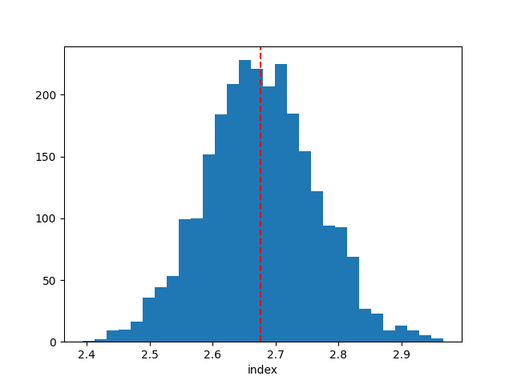
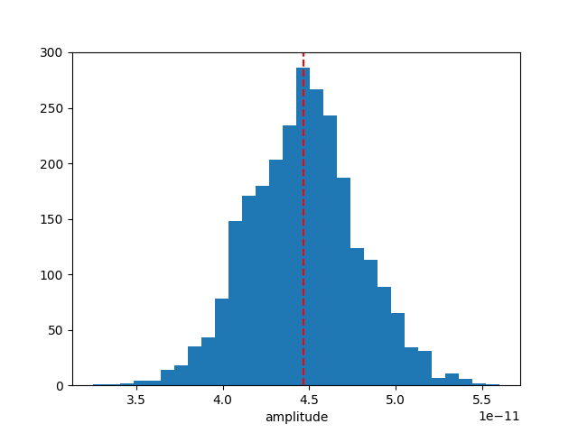
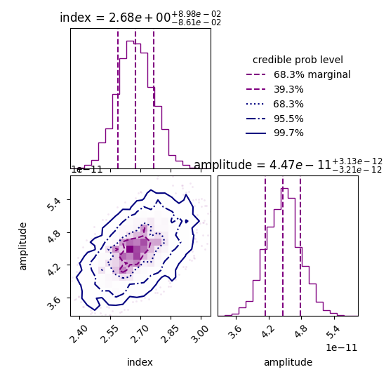
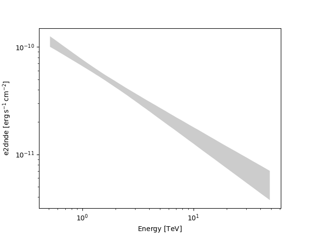

Note
Go to the end to download the full example code or to run this example in your browser via Binder.
Bayesian analysis with nested sampling#
A demonstration of a Bayesian analysis using the nested sampling technique.
Context#
1. Bayesian analysis#
Bayesian inference uses prior knowledge, in the form of a prior distribution, in order to estimate posterior probabilities which we traditionally visualise in the form of corner plots. These distributions contain more information than a maximum likelihood fit as they reveal not only the “best model” but provide a more accurate representation of errors and correlation between parameters. In particular, non-Gaussian degeneracies are complex to estimate with a maximum likelihood approach.
2. Limitations of the Markov Chain Monte Carlo approach#
A well-known approach to estimate this posterior distribution is the Markov Chain Monte Carlo (MCMC). This uses an ensemble of walkers to produce a chain of samples that after a convergence period will reach a stationary state. Once convergence is reached, the successive elements of the chain are samples of the target posterior distribution. However, the weakness of the MCMC approach lies in the “Once convergence” part. If the walkers are started far from the best likelihood region, the convergence time can be long or never reached if the walkers fall in a local minima. The choice of the initialisation point can become critical for complex models with a high number of dimensions and the ability of these walkers to escape a local minimum or to accurately describe a complex likelihood space is not guaranteed.
3. Nested sampling approach#
To overcome these issues, the nested sampling (NS) algorithm has gained traction in physics and astronomy. It is a Monte Carlo algorithm for computing an integral of the likelihood function over the prior model parameter space introduced in Skilling, 2004. The method performs this integral by evolving a collection of points through the parameter space (see recent reviews from Ashton et al., 2022, and Buchner, 2023). Without going into too many details, one important specificity of the NS method is that it starts from the entire parameter space and evolves a collection of live points to map all minima (including multiple modes if any), whereas Markov Chain Monte Carlo methods require an initialisation point and the walkers will explore the local likelihood. The ability of these walkers to escape a local minimum or to accurately describe a complex likelihood space is not guaranteed. This is a fundamental difference with MCMC or Minuit which will only ever probe the vicinity along their minimisation paths and do not have an overview of the global likelihood landscape. The analysis using the NS framework is more CPU time consuming than a standard classical fit, but it provides the full posterior distribution for all parameters, which is out of reach with traditional fitting techniques (N*(N-1)/2 contour plots to generate). In addition, it is more robust to the choice of initialisation, requires less human intervention and is therefore readily integrated in pipeline analysis. In Gammapy, we used the NS implementation of the UltraNest package (see here for more information), one of the leading package in Astronomy (already used in Cosmology and in X-rays). For a nice visualisation of the NS method see here : sampling visualisation. And for a tutorial of UltraNest applied to X-ray fitting with concrete examples and questions see : BXA Tutorial.
Note: please cite UltraNest if used for a paper
If you are using the “UltraNest” library for a paper, please follow its citation scheme: Cite UltraNest.
Proposed approach#
In this example, we will perform a Bayesian analysis with multiple 1D spectra of the Crab nebula data and investigate their posterior distributions.
Setup#
As usual, we’ll start with some setup …
import matplotlib.pyplot as plt
import numpy as np
import astropy.units as u
from gammapy.datasets import Datasets
from gammapy.datasets import SpectrumDatasetOnOff
from gammapy.modeling.models import (
SkyModel,
UniformPrior,
LogUniformPrior,
)
from gammapy.modeling.sampler import Sampler
Loading the spectral datasets#
Here we will load a few Crab 1D spectral data for which we will do a fit.
Model definition#
Now we want to define the spectral model that will be fitted to the data. The Crab spectra will be fitted here with a simple powerlaw for simplicity.
model = SkyModel.create(spectral_model="pl", name="crab")
Warning
Priors definition: Unlike a traditional fit where priors on the parameters are optional, here it is inherent to the Bayesian approach and are therefore mandatory.
In this case we will set (min,max) prior that will define the
boundaries in which the sampling will be performed.
Note that it is usually recommended to use a LogUniformPrior for
the parameters that have a large amplitude range like the
amplitude parameter.
A UniformPrior means that the samples will be drawn with uniform
probability between the (min,max) values in the linear or log space
in the case of a LogUniformPrior.
model.spectral_model.amplitude.prior = LogUniformPrior(min=1e-12, max=1e-10)
model.spectral_model.index.prior = UniformPrior(min=1, max=5)
datasets.models = [model]
print(datasets.models)
DatasetModels
Component 0: SkyModel
Name : crab
Datasets names : None
Spectral model type : PowerLawSpectralModel
Spatial model type :
Temporal model type :
Parameters:
index : 2.000 +/- 0.00
amplitude : 1.00e-12 +/- 0.0e+00 1 / (TeV s cm2)
reference (frozen): 1.000 TeV
Defining the sampler and options#
As for the Fit object, the Sampler object can receive
different backend (although just one is available for now).
The Sampler comes with “reasonable” default parameters, but you can
change them via the sampler_opts dictionary.
Here is a short description of the most relevant parameters that you
could change :
live_points: minimum number of live points throughout the run. More points allow to discover multiple peaks if existing, but is slower. To test the Prior boundaries and for debugging, a lower number (~100) can be used before a production run with more points (~400 or more).frac_remain: the cut-off condition for the integration, set by the maximum allowed fraction of posterior mass left in the live points vs the dead points. High values (e.g., 0.5) are faster and can be used if the posterior distribution is a relatively simple shape. A low value (1e-1, 1e-2) is optimal for finding peaks, but slower.log_dir: directory where the output files will be stored. If set to None, no files will be written. If set to a string, a directory will be created containing the ongoing status of the run and final results. For time consuming analysis, it is highly recommended to use that option to monitor the run and restart it in case of a crash (withresume=True).
Important note: unlike the MCMC method, you don’t need to define the number of steps for which the sampler will run. The algorithm will automatically stop once a convergence criteria has been reached.
sampler_opts = {
"live_points": 300,
"frac_remain": 0.3,
"log_dir": None,
}
sampler = Sampler(backend="ultranest", sampler_opts=sampler_opts)
Next we can run the sampler on a given dataset. No options are accepted in the run method.
[ultranest] Sampling 300 live points from prior ...
Mono-modal Volume: ~exp(-3.91) * Expected Volume: exp(0.00) Quality: ok
index : +1.0|************************************************| +5.0
amplitude: +1.0e-12|******************** *********** ****** * *****| +1.0e-10
Z=-inf(0.00%) | Like=-3711.77..-60.36 [-3711.7680..-314.0076] | it/evals=0/301 eff=0.0000% N=300
Z=-554.8(0.00%) | Like=-546.82..-60.36 [-3711.7680..-314.0076] | it/evals=20/323 eff=86.9565% N=300
Z=-537.0(0.00%) | Like=-531.59..-60.36 [-3711.7680..-314.0076] | it/evals=30/333 eff=90.9091% N=300
Z=-510.8(0.00%) | Like=-503.93..-60.36 [-3711.7680..-314.0076] | it/evals=49/355 eff=89.0909% N=300
Z=-495.3(0.00%) | Like=-487.36..-60.36 [-3711.7680..-314.0076] | it/evals=60/369 eff=86.9565% N=300
Mono-modal Volume: ~exp(-4.37) * Expected Volume: exp(-0.22) Quality: ok
index : +1.0|************************************************| +5.0
amplitude: +1.0e-12|******************** *********** ****** ** **** | +1.0e-10
Z=-486.4(0.00%) | Like=-480.99..-60.36 [-3711.7680..-314.0076] | it/evals=67/377 eff=87.0130% N=300
Z=-469.3(0.00%) | Like=-463.06..-60.36 [-3711.7680..-314.0076] | it/evals=86/400 eff=86.0000% N=300
Z=-464.1(0.00%) | Like=-458.23..-60.36 [-3711.7680..-314.0076] | it/evals=90/404 eff=86.5385% N=300
Z=-443.0(0.00%) | Like=-436.52..-60.36 [-3711.7680..-314.0076] | it/evals=111/427 eff=87.4016% N=300
Z=-430.0(0.00%) | Like=-421.99..-60.36 [-3711.7680..-314.0076] | it/evals=120/437 eff=87.5912% N=300
Mono-modal Volume: ~exp(-4.55) * Expected Volume: exp(-0.45) Quality: ok
index : +1.0| ***********************************************| +5.0
amplitude: +1.0e-12|******************************** ****** ** **** | +1.0e-10
Z=-409.5(0.00%) | Like=-403.00..-60.36 [-3711.7680..-314.0076] | it/evals=134/452 eff=88.1579% N=300
Z=-391.3(0.00%) | Like=-385.75..-60.36 [-3711.7680..-314.0076] | it/evals=150/469 eff=88.7574% N=300
Z=-374.3(0.00%) | Like=-367.85..-60.36 [-3711.7680..-314.0076] | it/evals=170/491 eff=89.0052% N=300
Z=-361.1(0.00%) | Like=-353.16..-59.11 [-3711.7680..-314.0076] | it/evals=180/505 eff=87.8049% N=300
Z=-340.4(0.00%) | Like=-333.92..-59.11 [-3711.7680..-314.0076] | it/evals=197/528 eff=86.4035% N=300
Mono-modal Volume: ~exp(-4.69) * Expected Volume: exp(-0.67) Quality: ok
index : +1.0| *********************************************| +5.0
amplitude: +1.0e-12| ************************************** ** *****| +1.0e-10
Z=-333.5(0.00%) | Like=-327.09..-59.11 [-3711.7680..-314.0076] | it/evals=201/532 eff=86.6379% N=300
Z=-319.7(0.00%) | Like=-313.14..-59.11 [-313.4707..-182.6342] | it/evals=210/545 eff=85.7143% N=300
Z=-302.3(0.00%) | Like=-294.61..-59.11 [-313.4707..-182.6342] | it/evals=230/567 eff=86.1423% N=300
Z=-291.0(0.00%) | Like=-284.60..-59.11 [-313.4707..-182.6342] | it/evals=240/581 eff=85.4093% N=300
Z=-277.0(0.00%) | Like=-270.60..-59.11 [-313.4707..-182.6342] | it/evals=257/604 eff=84.5395% N=300
Mono-modal Volume: ~exp(-4.70) * Expected Volume: exp(-0.89) Quality: ok
index : +1.0| ********************************************| +5.0
amplitude: +1.0e-12| ************************************* ** *****| +1.0e-10
Z=-268.5(0.00%) | Like=-262.40..-59.11 [-313.4707..-182.6342] | it/evals=268/618 eff=84.2767% N=300
Z=-267.5(0.00%) | Like=-261.68..-59.11 [-313.4707..-182.6342] | it/evals=270/620 eff=84.3750% N=300
Z=-257.5(0.00%) | Like=-251.54..-59.11 [-313.4707..-182.6342] | it/evals=290/644 eff=84.3023% N=300
Z=-254.0(0.00%) | Like=-247.50..-59.11 [-313.4707..-182.6342] | it/evals=300/655 eff=84.5070% N=300
Z=-240.4(0.00%) | Like=-233.50..-59.11 [-313.4707..-182.6342] | it/evals=316/679 eff=83.3773% N=300
Z=-233.2(0.00%) | Like=-227.45..-59.11 [-313.4707..-182.6342] | it/evals=330/698 eff=82.9146% N=300
Mono-modal Volume: ~exp(-5.04) * Expected Volume: exp(-1.12) Quality: ok
index : +1.0| ******************************************| +5.0
amplitude: +1.0e-12| ************************************ ********| +1.0e-10
Z=-231.7(0.00%) | Like=-225.97..-59.11 [-313.4707..-182.6342] | it/evals=335/705 eff=82.7160% N=300
Z=-219.6(0.00%) | Like=-212.90..-59.11 [-313.4707..-182.6342] | it/evals=354/727 eff=82.9040% N=300
Z=-216.2(0.00%) | Like=-209.86..-59.11 [-313.4707..-182.6342] | it/evals=360/738 eff=82.1918% N=300
Z=-209.0(0.00%) | Like=-202.07..-59.11 [-313.4707..-182.6342] | it/evals=376/761 eff=81.5618% N=300
Z=-198.9(0.00%) | Like=-192.61..-59.11 [-313.4707..-182.6342] | it/evals=390/780 eff=81.2500% N=300
Mono-modal Volume: ~exp(-5.30) * Expected Volume: exp(-1.34) Quality: ok
index : +1.0| **************************************** | +5.0
amplitude: +1.0e-12| ********************************************| +1.0e-10
Z=-194.4(0.00%) | Like=-188.29..-59.11 [-313.4707..-182.6342] | it/evals=402/796 eff=81.0484% N=300
Z=-188.3(0.00%) | Like=-182.15..-58.81 [-182.2602..-128.7639] | it/evals=420/819 eff=80.9249% N=300
Z=-184.9(0.00%) | Like=-179.39..-58.81 [-182.2602..-128.7639] | it/evals=433/842 eff=79.8893% N=300
Z=-178.5(0.00%) | Like=-172.13..-58.81 [-182.2602..-128.7639] | it/evals=450/863 eff=79.9290% N=300
Z=-172.9(0.00%) | Like=-167.40..-58.81 [-182.2602..-128.7639] | it/evals=468/885 eff=80.0000% N=300
Mono-modal Volume: ~exp(-5.68) * Expected Volume: exp(-1.56) Quality: ok
index : +1.0| *********************************** | +5.0
amplitude: +1.0e-12| ****************************************** | +1.0e-10
Z=-172.7(0.00%) | Like=-167.35..-58.81 [-182.2602..-128.7639] | it/evals=469/886 eff=80.0341% N=300
Z=-170.2(0.00%) | Like=-164.24..-58.81 [-182.2602..-128.7639] | it/evals=480/905 eff=79.3388% N=300
Z=-165.0(0.00%) | Like=-158.85..-58.81 [-182.2602..-128.7639] | it/evals=500/929 eff=79.4913% N=300
Z=-161.4(0.00%) | Like=-155.16..-58.81 [-182.2602..-128.7639] | it/evals=510/945 eff=79.0698% N=300
Z=-156.9(0.00%) | Like=-150.77..-58.81 [-182.2602..-128.7639] | it/evals=528/968 eff=79.0419% N=300
Mono-modal Volume: ~exp(-5.88) * Expected Volume: exp(-1.79) Quality: ok
index : +1.0| ******************************* | +5.0
amplitude: +1.0e-12| **************************************** | +1.0e-10
Z=-155.3(0.00%) | Like=-149.71..-58.81 [-182.2602..-128.7639] | it/evals=536/979 eff=78.9396% N=300
Z=-154.8(0.00%) | Like=-149.51..-58.81 [-182.2602..-128.7639] | it/evals=540/983 eff=79.0630% N=300
Z=-151.3(0.00%) | Like=-145.41..-58.81 [-182.2602..-128.7639] | it/evals=556/1006 eff=78.7535% N=300
Z=-148.5(0.00%) | Like=-142.36..-58.81 [-182.2602..-128.7639] | it/evals=570/1024 eff=78.7293% N=300
Z=-145.1(0.00%) | Like=-139.12..-58.81 [-182.2602..-128.7639] | it/evals=585/1049 eff=78.1041% N=300
Z=-142.9(0.00%) | Like=-136.95..-58.81 [-182.2602..-128.7639] | it/evals=598/1072 eff=77.4611% N=300
Z=-142.6(0.00%) | Like=-136.64..-58.81 [-182.2602..-128.7639] | it/evals=600/1074 eff=77.5194% N=300
Mono-modal Volume: ~exp(-5.92) * Expected Volume: exp(-2.01) Quality: ok
index : +1.0| **************************** +4.1 | +5.0
amplitude: +1.0e-12| ************************************** | +1.0e-10
Z=-142.0(0.00%) | Like=-135.68..-58.81 [-182.2602..-128.7639] | it/evals=603/1077 eff=77.6062% N=300
Z=-138.7(0.00%) | Like=-132.89..-58.81 [-182.2602..-128.7639] | it/evals=620/1100 eff=77.5000% N=300
Z=-135.9(0.00%) | Like=-129.36..-58.81 [-182.2602..-128.7639] | it/evals=630/1117 eff=77.1114% N=300
Z=-133.1(0.00%) | Like=-127.05..-58.81 [-128.3957..-94.9550] | it/evals=645/1140 eff=76.7857% N=300
Z=-131.1(0.00%) | Like=-124.61..-58.81 [-128.3957..-94.9550] | it/evals=660/1164 eff=76.3889% N=300
Mono-modal Volume: ~exp(-6.22) * Expected Volume: exp(-2.23) Quality: ok
index : +1.0| ************************* +3.9 | +5.0
amplitude: +1.0e-12| ********************************* | +1.0e-10
Z=-129.5(0.00%) | Like=-123.75..-58.81 [-128.3957..-94.9550] | it/evals=670/1176 eff=76.4840% N=300
Z=-127.3(0.00%) | Like=-120.74..-58.81 [-128.3957..-94.9550] | it/evals=688/1200 eff=76.4444% N=300
Z=-126.9(0.00%) | Like=-120.25..-58.81 [-128.3957..-94.9550] | it/evals=690/1203 eff=76.4120% N=300
Z=-123.7(0.00%) | Like=-117.70..-58.81 [-128.3957..-94.9550] | it/evals=709/1225 eff=76.6486% N=300
Z=-122.2(0.00%) | Like=-116.20..-58.81 [-128.3957..-94.9550] | it/evals=720/1237 eff=76.8410% N=300
Z=-120.7(0.00%) | Like=-114.77..-58.81 [-128.3957..-94.9550] | it/evals=734/1260 eff=76.4583% N=300
Mono-modal Volume: ~exp(-6.22) Expected Volume: exp(-2.46) Quality: ok
index : +1.0| +1.9 *********************** +3.8 | +5.0
amplitude: +1.0e-12| ******************************* | +1.0e-10
Z=-117.6(0.00%) | Like=-110.49..-58.81 [-128.3957..-94.9550] | it/evals=748/1282 eff=76.1711% N=300
Z=-117.1(0.00%) | Like=-110.45..-58.81 [-128.3957..-94.9550] | it/evals=750/1285 eff=76.1421% N=300
Z=-114.4(0.00%) | Like=-107.60..-58.81 [-128.3957..-94.9550] | it/evals=764/1308 eff=75.7937% N=300
Z=-111.8(0.00%) | Like=-105.06..-58.81 [-128.3957..-94.9550] | it/evals=778/1333 eff=75.3146% N=300
Z=-111.5(0.00%) | Like=-104.84..-58.81 [-128.3957..-94.9550] | it/evals=780/1336 eff=75.2896% N=300
Z=-109.0(0.00%) | Like=-102.38..-58.81 [-128.3957..-94.9550] | it/evals=792/1359 eff=74.7875% N=300
Mono-modal Volume: ~exp(-6.55) * Expected Volume: exp(-2.68) Quality: ok
index : +1.0| +2.0 ******************** +3.6 | +5.0
amplitude: +1.0e-12| **************************** +7.8e-11| +1.0e-10
Z=-107.2(0.00%) | Like=-100.98..-58.81 [-128.3957..-94.9550] | it/evals=804/1373 eff=74.9301% N=300
Z=-106.6(0.00%) | Like=-100.49..-58.81 [-128.3957..-94.9550] | it/evals=810/1381 eff=74.9306% N=300
Z=-105.0(0.00%) | Like=-98.82..-58.81 [-128.3957..-94.9550] | it/evals=828/1404 eff=75.0000% N=300
Z=-103.5(0.00%) | Like=-97.03..-58.81 [-128.3957..-94.9550] | it/evals=840/1420 eff=75.0000% N=300
Z=-101.9(0.00%) | Like=-95.67..-58.81 [-128.3957..-94.9550] | it/evals=857/1443 eff=74.9781% N=300
Z=-100.5(0.00%) | Like=-94.12..-58.81 [-94.9153..-77.5083] | it/evals=870/1459 eff=75.0647% N=300
Mono-modal Volume: ~exp(-6.71) * Expected Volume: exp(-2.90) Quality: ok
index : +1.0| +2.1 ****************** +3.5 | +5.0
amplitude: +1.0e-12| +2.4e-11 ************************* +7.4e-11 | +1.0e-10
Z=-100.4(0.00%) | Like=-94.12..-58.81 [-94.9153..-77.5083] | it/evals=871/1461 eff=75.0215% N=300
Z=-98.4(0.00%) | Like=-91.81..-58.81 [-94.9153..-77.5083] | it/evals=888/1483 eff=75.0634% N=300
Z=-97.2(0.00%) | Like=-90.98..-58.81 [-94.9153..-77.5083] | it/evals=900/1499 eff=75.0626% N=300
Z=-95.4(0.00%) | Like=-88.96..-58.81 [-94.9153..-77.5083] | it/evals=918/1524 eff=75.0000% N=300
Z=-94.5(0.00%) | Like=-88.11..-58.81 [-94.9153..-77.5083] | it/evals=930/1543 eff=74.8190% N=300
Mono-modal Volume: ~exp(-7.15) * Expected Volume: exp(-3.13) Quality: ok
index : +1.0| +2.1 **************** +3.4 | +5.0
amplitude: +1.0e-12| +2.5e-11 *********************** +7.1e-11 | +1.0e-10
Z=-93.8(0.00%) | Like=-87.59..-58.81 [-94.9153..-77.5083] | it/evals=938/1552 eff=74.9201% N=300
Z=-92.6(0.00%) | Like=-86.12..-58.81 [-94.9153..-77.5083] | it/evals=955/1574 eff=74.9608% N=300
Z=-92.2(0.00%) | Like=-85.73..-58.81 [-94.9153..-77.5083] | it/evals=960/1580 eff=75.0000% N=300
Z=-90.7(0.00%) | Like=-84.22..-58.81 [-94.9153..-77.5083] | it/evals=978/1602 eff=75.1152% N=300
Z=-89.8(0.00%) | Like=-83.34..-58.81 [-94.9153..-77.5083] | it/evals=990/1616 eff=75.2280% N=300
Mono-modal Volume: ~exp(-7.21) * Expected Volume: exp(-3.35) Quality: ok
index : +1.0| +2.2 ************** +3.3 | +5.0
amplitude: +1.0e-12| +2.7e-11 ******************** +6.7e-11 | +1.0e-10
Z=-88.5(0.00%) | Like=-81.91..-58.81 [-94.9153..-77.5083] | it/evals=1005/1640 eff=75.0000% N=300
Z=-87.4(0.00%) | Like=-80.90..-58.81 [-94.9153..-77.5083] | it/evals=1020/1661 eff=74.9449% N=300
Z=-85.9(0.00%) | Like=-79.32..-58.81 [-94.9153..-77.5083] | it/evals=1038/1683 eff=75.0542% N=300
Z=-85.1(0.00%) | Like=-78.51..-58.81 [-94.9153..-77.5083] | it/evals=1050/1705 eff=74.7331% N=300
Z=-83.9(0.00%) | Like=-77.27..-58.81 [-77.3820..-68.3199] | it/evals=1069/1727 eff=74.9124% N=300
Mono-modal Volume: ~exp(-7.50) * Expected Volume: exp(-3.57) Quality: ok
index : +1.0| +2.2 ************* +3.2 | +5.0
amplitude: +1.0e-12| +2.9e-11 ****************** +6.4e-11 | +1.0e-10
Z=-83.7(0.00%) | Like=-77.03..-58.81 [-77.3820..-68.3199] | it/evals=1072/1730 eff=74.9650% N=300
Z=-83.2(0.00%) | Like=-76.52..-58.81 [-77.3820..-68.3199] | it/evals=1080/1740 eff=75.0000% N=300
Z=-82.2(0.00%) | Like=-75.79..-58.81 [-77.3820..-68.3199] | it/evals=1095/1763 eff=74.8462% N=300
Z=-81.4(0.00%) | Like=-74.80..-58.81 [-77.3820..-68.3199] | it/evals=1110/1781 eff=74.9494% N=300
Z=-80.5(0.00%) | Like=-73.99..-58.81 [-77.3820..-68.3199] | it/evals=1127/1804 eff=74.9335% N=300
Mono-modal Volume: ~exp(-7.60) * Expected Volume: exp(-3.80) Quality: ok
index : +1.0| +2.3 *********** +3.1 | +5.0
amplitude: +1.0e-12| +3.0e-11 ***************** +6.3e-11 | +1.0e-10
Z=-80.0(0.00%) | Like=-73.55..-58.81 [-77.3820..-68.3199] | it/evals=1139/1820 eff=74.9342% N=300
Z=-79.9(0.00%) | Like=-73.54..-58.81 [-77.3820..-68.3199] | it/evals=1140/1821 eff=74.9507% N=300
Z=-79.2(0.00%) | Like=-72.96..-58.81 [-77.3820..-68.3199] | it/evals=1158/1845 eff=74.9515% N=300
Z=-78.8(0.00%) | Like=-72.38..-58.81 [-77.3820..-68.3199] | it/evals=1170/1862 eff=74.9040% N=300
Z=-78.2(0.00%) | Like=-71.75..-58.81 [-77.3820..-68.3199] | it/evals=1185/1885 eff=74.7634% N=300
Z=-77.6(0.00%) | Like=-71.27..-58.80 [-77.3820..-68.3199] | it/evals=1200/1905 eff=74.7664% N=300
Mono-modal Volume: ~exp(-7.69) * Expected Volume: exp(-4.02) Quality: ok
index : +1.0| +2.3 *********** +3.1 | +5.0
amplitude: +1.0e-12| +3.1e-11 *************** +6.1e-11 | +1.0e-10
Z=-77.4(0.00%) | Like=-71.02..-58.80 [-77.3820..-68.3199] | it/evals=1206/1911 eff=74.8603% N=300
Z=-76.8(0.00%) | Like=-70.37..-58.80 [-77.3820..-68.3199] | it/evals=1223/1934 eff=74.8470% N=300
Z=-76.6(0.00%) | Like=-70.14..-58.80 [-77.3820..-68.3199] | it/evals=1230/1943 eff=74.8631% N=300
Z=-76.1(0.00%) | Like=-69.60..-58.80 [-77.3820..-68.3199] | it/evals=1246/1966 eff=74.7899% N=300
Z=-75.6(0.00%) | Like=-69.13..-58.80 [-77.3820..-68.3199] | it/evals=1259/1989 eff=74.5411% N=300
Z=-75.6(0.00%) | Like=-69.12..-58.80 [-77.3820..-68.3199] | it/evals=1260/1990 eff=74.5562% N=300
Mono-modal Volume: ~exp(-8.16) * Expected Volume: exp(-4.24) Quality: ok
index : +1.0| +2.3 ********* +3.1 | +5.0
amplitude: +1.0e-12| +3.3e-11 ************* +5.8e-11 | +1.0e-10
Z=-75.2(0.01%) | Like=-68.67..-58.80 [-77.3820..-68.3199] | it/evals=1273/2006 eff=74.6190% N=300
Z=-74.6(0.01%) | Like=-67.95..-58.80 [-68.3138..-65.6840] | it/evals=1290/2028 eff=74.6528% N=300
Z=-74.0(0.02%) | Like=-67.29..-58.80 [-68.3138..-65.6840] | it/evals=1309/2051 eff=74.7573% N=300
Z=-73.6(0.03%) | Like=-66.88..-58.80 [-68.3138..-65.6840] | it/evals=1320/2062 eff=74.9149% N=300
Z=-73.1(0.05%) | Like=-66.48..-58.80 [-68.3138..-65.6840] | it/evals=1337/2086 eff=74.8600% N=300
Mono-modal Volume: ~exp(-8.40) * Expected Volume: exp(-4.47) Quality: ok
index : +1.0| +2.4 ********* +3.0 | +5.0
amplitude: +1.0e-12| +3.4e-11 *********** +5.7e-11 | +1.0e-10
Z=-73.0(0.05%) | Like=-66.44..-58.80 [-68.3138..-65.6840] | it/evals=1340/2089 eff=74.9022% N=300
Z=-72.8(0.07%) | Like=-66.20..-58.80 [-68.3138..-65.6840] | it/evals=1350/2102 eff=74.9168% N=300
Z=-72.3(0.10%) | Like=-65.85..-58.80 [-68.3138..-65.6840] | it/evals=1370/2125 eff=75.0685% N=300
Z=-72.1(0.13%) | Like=-65.69..-58.80 [-68.3138..-65.6840] | it/evals=1380/2138 eff=75.0816% N=300
Z=-71.8(0.17%) | Like=-65.31..-58.80 [-65.6647..-65.3032] | it/evals=1396/2161 eff=75.0134% N=300
Mono-modal Volume: ~exp(-8.69) * Expected Volume: exp(-4.69) Quality: ok
index : +1.0| +2.4 ******** +3.0 | +5.0
amplitude: +1.0e-12| +3.5e-11 *********** +5.5e-11 | +1.0e-10
Z=-71.5(0.22%) | Like=-65.04..-58.80 [-65.0406..-65.0367]*| it/evals=1407/2177 eff=74.9600% N=300
Z=-71.5(0.23%) | Like=-64.92..-58.80 [-64.9175..-64.8950] | it/evals=1410/2181 eff=74.9601% N=300
Z=-71.2(0.31%) | Like=-64.61..-58.80 [-64.6974..-64.6128] | it/evals=1424/2205 eff=74.7507% N=300
Z=-70.9(0.44%) | Like=-64.29..-58.80 [-64.2911..-64.2781] | it/evals=1440/2224 eff=74.8441% N=300
Z=-70.6(0.59%) | Like=-64.06..-58.80 [-64.0618..-64.0513] | it/evals=1455/2248 eff=74.6920% N=300
Z=-70.3(0.76%) | Like=-63.82..-58.80 [-63.8181..-63.8161]*| it/evals=1470/2269 eff=74.6572% N=300
Mono-modal Volume: ~exp(-8.69) Expected Volume: exp(-4.91) Quality: ok
index : +1.0| +2.4 ******* +3.0 | +5.0
amplitude: +1.0e-12| +3.6e-11 ********** +5.5e-11 | +1.0e-10
Z=-70.2(0.89%) | Like=-63.71..-58.80 [-63.7130..-63.7103]*| it/evals=1481/2290 eff=74.4221% N=300
Z=-69.9(1.14%) | Like=-63.47..-58.75 [-63.4663..-63.4324] | it/evals=1498/2312 eff=74.4533% N=300
Z=-69.9(1.18%) | Like=-63.42..-58.75 [-63.4214..-63.4112] | it/evals=1500/2315 eff=74.4417% N=300
Z=-69.7(1.46%) | Like=-63.20..-58.75 [-63.1986..-63.1955]*| it/evals=1516/2338 eff=74.3867% N=300
Z=-69.5(1.77%) | Like=-63.07..-58.75 [-63.0701..-63.0659]*| it/evals=1530/2360 eff=74.2718% N=300
Mono-modal Volume: ~exp(-8.94) * Expected Volume: exp(-5.14) Quality: ok
index : +1.0| +2.4 ****** +2.9 | +5.0
amplitude: +1.0e-12| +3.6e-11 ********* +5.4e-11 | +1.0e-10
Z=-69.3(1.97%) | Like=-62.89..-58.75 [-62.8858..-62.8734] | it/evals=1541/2375 eff=74.2651% N=300
Z=-69.1(2.40%) | Like=-62.75..-58.75 [-62.7649..-62.7545] | it/evals=1558/2397 eff=74.2966% N=300
Z=-69.1(2.46%) | Like=-62.75..-58.75 [-62.7468..-62.7300] | it/evals=1560/2400 eff=74.2857% N=300
Z=-69.0(2.87%) | Like=-62.58..-58.75 [-62.5842..-62.5795]*| it/evals=1574/2422 eff=74.1753% N=300
Z=-68.8(3.42%) | Like=-62.40..-58.75 [-62.4038..-62.3983]*| it/evals=1590/2444 eff=74.1604% N=300
Z=-68.6(3.94%) | Like=-62.24..-58.75 [-62.2445..-62.2374]*| it/evals=1607/2467 eff=74.1578% N=300
Mono-modal Volume: ~exp(-8.94) Expected Volume: exp(-5.36) Quality: ok
index : +1.0| +2.5 ****** +2.9 | +5.0
amplitude: +1.0e-12| +3.7e-11 ********* +5.3e-11 | +1.0e-10
Z=-68.5(4.53%) | Like=-62.11..-58.75 [-62.1050..-62.1041]*| it/evals=1620/2489 eff=74.0064% N=300
Z=-68.4(5.09%) | Like=-62.00..-58.75 [-61.9999..-61.9951]*| it/evals=1634/2512 eff=73.8698% N=300
Z=-68.3(5.75%) | Like=-61.80..-58.75 [-61.8020..-61.7963]*| it/evals=1648/2535 eff=73.7360% N=300
Z=-68.3(5.86%) | Like=-61.78..-58.75 [-61.7963..-61.7795] | it/evals=1650/2537 eff=73.7595% N=300
Z=-68.1(6.73%) | Like=-61.63..-58.75 [-61.6477..-61.6342] | it/evals=1665/2560 eff=73.6726% N=300
Mono-modal Volume: ~exp(-9.52) * Expected Volume: exp(-5.58) Quality: ok
index : +1.0| +2.5 ****** +2.9 | +5.0
amplitude: +1.0e-12| +3.8e-11 ******** +5.2e-11 | +1.0e-10
Z=-68.0(7.31%) | Like=-61.54..-58.75 [-61.5399..-61.5321]*| it/evals=1675/2581 eff=73.4327% N=300
Z=-68.0(7.59%) | Like=-61.51..-58.75 [-61.5059..-61.4897] | it/evals=1680/2588 eff=73.4266% N=300
Z=-67.8(8.96%) | Like=-61.31..-58.75 [-61.3093..-61.3048]*| it/evals=1699/2610 eff=73.5498% N=300
Z=-67.8(9.67%) | Like=-61.25..-58.75 [-61.2511..-61.2458]*| it/evals=1710/2626 eff=73.5168% N=300
Z=-67.6(10.89%) | Like=-61.13..-58.75 [-61.1340..-61.1324]*| it/evals=1728/2649 eff=73.5632% N=300
Z=-67.6(11.73%) | Like=-61.05..-58.75 [-61.0518..-61.0513]*| it/evals=1740/2665 eff=73.5729% N=300
Mono-modal Volume: ~exp(-9.57) * Expected Volume: exp(-5.81) Quality: ok
index : +1.0| +2.5 ****** +2.8 | +5.0
amplitude: +1.0e-12| +3.8e-11 ******* +5.1e-11 | +1.0e-10
Z=-67.5(11.87%) | Like=-61.03..-58.75 [-61.0513..-61.0301] | it/evals=1742/2668 eff=73.5642% N=300
Z=-67.4(13.56%) | Like=-60.91..-58.75 [-60.9138..-60.9081]*| it/evals=1760/2690 eff=73.6402% N=300
Z=-67.4(14.43%) | Like=-60.85..-58.75 [-60.8465..-60.8414]*| it/evals=1770/2702 eff=73.6886% N=300
Z=-67.3(16.16%) | Like=-60.77..-58.75 [-60.7737..-60.7727]*| it/evals=1787/2725 eff=73.6907% N=300
Z=-67.2(17.20%) | Like=-60.74..-58.75 [-60.7354..-60.7094] | it/evals=1800/2740 eff=73.7705% N=300
Mono-modal Volume: ~exp(-9.88) * Expected Volume: exp(-6.03) Quality: ok
index : +1.0| +2.5 ***** +2.8 | +5.0
amplitude: +1.0e-12| +3.9e-11 ****** +5.0e-11 | +1.0e-10
Z=-67.1(18.02%) | Like=-60.65..-58.75 [-60.6612..-60.6508] | it/evals=1809/2751 eff=73.8066% N=300
Z=-67.1(19.48%) | Like=-60.56..-58.75 [-60.5610..-60.5584]*| it/evals=1825/2773 eff=73.7970% N=300
Z=-67.0(19.95%) | Like=-60.53..-58.75 [-60.5338..-60.5321]*| it/evals=1830/2778 eff=73.8499% N=300
Z=-66.9(21.86%) | Like=-60.42..-58.75 [-60.4237..-60.4123] | it/evals=1848/2801 eff=73.8904% N=300
Z=-66.9(22.84%) | Like=-60.36..-58.75 [-60.3611..-60.3601]*| it/evals=1860/2817 eff=73.8975% N=300
Mono-modal Volume: ~exp(-9.88) Expected Volume: exp(-6.25) Quality: ok
index : +1.0| +2.5 **** +2.8 | +5.0
amplitude: +1.0e-12| +3.9e-11 ****** +5.0e-11 | +1.0e-10
Z=-66.8(24.27%) | Like=-60.28..-58.75 [-60.2818..-60.2809]*| it/evals=1876/2838 eff=73.9165% N=300
Z=-66.8(25.87%) | Like=-60.19..-58.75 [-60.1916..-60.1910]*| it/evals=1890/2858 eff=73.8858% N=300
Z=-66.7(27.59%) | Like=-60.12..-58.75 [-60.1328..-60.1228] | it/evals=1904/2882 eff=73.7413% N=300
Z=-66.6(29.33%) | Like=-60.04..-58.75 [-60.0406..-60.0344]*| it/evals=1920/2901 eff=73.8178% N=300
Z=-66.6(30.95%) | Like=-59.98..-58.75 [-59.9831..-59.9799]*| it/evals=1934/2925 eff=73.6762% N=300
Mono-modal Volume: ~exp(-10.01) * Expected Volume: exp(-6.48) Quality: ok
index : +1.0| +2.5 **** +2.8 | +5.0
amplitude: +1.0e-12| +4.0e-11 ****** +4.9e-11 | +1.0e-10
Z=-66.5(32.01%) | Like=-59.96..-58.75 [-59.9580..-59.9555]*| it/evals=1943/2939 eff=73.6264% N=300
Z=-66.5(32.78%) | Like=-59.93..-58.75 [-59.9330..-59.9309]*| it/evals=1950/2946 eff=73.6961% N=300
Z=-66.5(34.50%) | Like=-59.90..-58.75 [-59.8971..-59.8963]*| it/evals=1964/2969 eff=73.5856% N=300
Z=-66.4(36.31%) | Like=-59.85..-58.75 [-59.8482..-59.8427]*| it/evals=1980/2992 eff=73.5513% N=300
Z=-66.4(38.15%) | Like=-59.80..-58.75 [-59.8024..-59.8017]*| it/evals=1995/3015 eff=73.4807% N=300
Z=-66.3(39.60%) | Like=-59.77..-58.75 [-59.7703..-59.7701]*| it/evals=2007/3038 eff=73.3017% N=300
Mono-modal Volume: ~exp(-10.41) * Expected Volume: exp(-6.70) Quality: ok
index : +1.0| +2.6 **** +2.8 | +5.0
amplitude: +1.0e-12| +4.0e-11 ***** +4.9e-11 | +1.0e-10
Z=-66.3(40.02%) | Like=-59.76..-58.75 [-59.7649..-59.7598]*| it/evals=2010/3047 eff=73.1707% N=300
Z=-66.3(41.75%) | Like=-59.71..-58.75 [-59.7082..-59.7080]*| it/evals=2025/3070 eff=73.1047% N=300
Z=-66.2(43.34%) | Like=-59.65..-58.75 [-59.6482..-59.6455]*| it/evals=2039/3093 eff=73.0039% N=300
Z=-66.2(43.45%) | Like=-59.65..-58.75 [-59.6455..-59.6388]*| it/evals=2040/3094 eff=73.0136% N=300
Z=-66.2(45.02%) | Like=-59.61..-58.75 [-59.6133..-59.6084]*| it/evals=2054/3117 eff=72.9144% N=300
Z=-66.2(46.76%) | Like=-59.56..-58.75 [-59.5594..-59.5558]*| it/evals=2069/3141 eff=72.8265% N=300
Z=-66.2(46.86%) | Like=-59.56..-58.75 [-59.5558..-59.5557]*| it/evals=2070/3143 eff=72.8104% N=300
Mono-modal Volume: ~exp(-10.84) * Expected Volume: exp(-6.92) Quality: ok
index : +1.0| +2.6 **** +2.8 | +5.0
amplitude: +1.0e-12| +4.1e-11 **** +4.8e-11 | +1.0e-10
Z=-66.1(47.67%) | Like=-59.53..-58.75 [-59.5338..-59.5331]*| it/evals=2077/3151 eff=72.8516% N=300
Z=-66.1(49.36%) | Like=-59.50..-58.75 [-59.5005..-59.4977]*| it/evals=2092/3174 eff=72.7905% N=300
Z=-66.1(50.18%) | Like=-59.48..-58.75 [-59.4811..-59.4811]*| it/evals=2100/3183 eff=72.8408% N=300
Z=-66.0(52.28%) | Like=-59.44..-58.75 [-59.4397..-59.4383]*| it/evals=2119/3205 eff=72.9432% N=300
Z=-66.0(53.42%) | Like=-59.41..-58.75 [-59.4138..-59.4093]*| it/evals=2130/3223 eff=72.8703% N=300
Mono-modal Volume: ~exp(-10.84) Expected Volume: exp(-7.15) Quality: ok
index : +1.0| +2.6 **** +2.8 | +5.0
amplitude: +1.0e-12| +4.1e-11 **** +4.8e-11 | +1.0e-10
Z=-66.0(55.04%) | Like=-59.39..-58.75 [-59.3876..-59.3831]*| it/evals=2145/3244 eff=72.8601% N=300
Z=-66.0(56.68%) | Like=-59.35..-58.75 [-59.3517..-59.3459]*| it/evals=2160/3262 eff=72.9237% N=300
Z=-65.9(58.48%) | Like=-59.31..-58.75 [-59.3050..-59.3041]*| it/evals=2177/3285 eff=72.9313% N=300
Z=-65.9(59.81%) | Like=-59.29..-58.75 [-59.2870..-59.2851]*| it/evals=2190/3307 eff=72.8301% N=300
Z=-65.9(60.80%) | Like=-59.27..-58.75 [-59.2726..-59.2712]*| it/evals=2199/3330 eff=72.5743% N=300
Mono-modal Volume: ~exp(-11.17) * Expected Volume: exp(-7.37) Quality: ok
index : +1.0| +2.6 *** +2.8 | +5.0
amplitude: +1.0e-12| +4.1e-11 **** +4.7e-11 | +1.0e-10
Z=-65.9(61.98%) | Like=-59.25..-58.75 [-59.2544..-59.2528]*| it/evals=2211/3345 eff=72.6108% N=300
Z=-65.9(62.82%) | Like=-59.24..-58.75 [-59.2423..-59.2414]*| it/evals=2220/3356 eff=72.6440% N=300
Z=-65.8(64.69%) | Like=-59.21..-58.75 [-59.2114..-59.2110]*| it/evals=2240/3378 eff=72.7745% N=300
Z=-65.8(65.60%) | Like=-59.19..-58.75 [-59.1928..-59.1909]*| it/evals=2250/3394 eff=72.7214% N=300
Z=-65.8(66.96%) | Like=-59.18..-58.75 [-59.1786..-59.1783]*| it/evals=2265/3416 eff=72.6893% N=300
Mono-modal Volume: ~exp(-11.28) * Expected Volume: exp(-7.59) Quality: ok
index : +1.0| +2.6 ** +2.7 | +5.0
amplitude: +1.0e-12| +4.2e-11 **** +4.7e-11 | +1.0e-10
Z=-65.8(68.05%) | Like=-59.16..-58.75 [-59.1616..-59.1605]*| it/evals=2278/3436 eff=72.6403% N=300
Z=-65.8(68.22%) | Like=-59.16..-58.75 [-59.1569..-59.1565]*| it/evals=2280/3438 eff=72.6577% N=300
Z=-65.8(69.76%) | Like=-59.13..-58.75 [-59.1336..-59.1331]*| it/evals=2298/3460 eff=72.7215% N=300
[ultranest] Explored until L=-6e+01
[ultranest] Likelihood function evaluations: 3465
[ultranest] logZ = -65.4 +- 0.1062
[ultranest] Effective samples strategy satisfied (ESS = 1026.8, need >400)
[ultranest] Posterior uncertainty strategy is satisfied (KL: 0.46+-0.08 nat, need <0.50 nat)
[ultranest] Evidency uncertainty strategy is satisfied (dlogz=0.28, need <0.5)
[ultranest] logZ error budget: single: 0.14 bs:0.11 tail:0.26 total:0.28 required:<0.50
[ultranest] done iterating.
logZ = -65.400 +- 0.343
single instance: logZ = -65.400 +- 0.136
bootstrapped : logZ = -65.401 +- 0.221
tail : logZ = +- 0.262
insert order U test : converged: True correlation: inf iterations
index : 2.364 │ ▁ ▁▁▁▁▁▂▂▂▃▄▃▅▅▇▇▆▇▅▇▆▅▃▃▄▃▃▁▁▁▁▁▁▁▁▁ │2.996 2.676 +- 0.088
amplitude : 0.0000000000313│ ▁ ▁▁▁▁▁▁▁▁▁▂▃▅▅▄▆▆▇▆▇▆▅▄▃▃▃▂▁▁▁▁▁▁▁ ▁ │0.0000000000572 0.0000000000447 +- 0.0000000000032
Understanding the outputs#
In the Jupyter notebook, you should be able to see an interactive visualisation of how the parameter space shrinks which starts from the (min,max) shrinks down towards the optimal parameters.
The output above is filled with interesting information. Here we provide a short description of the most relevant information provided above. For more detailed information see the UltraNest docs.
During the sampling
Z=-68.8(0.53%) | Like=-63.96..-58.75 [-63.9570..-63.9539]*| it/evals=640/1068 eff=73.7327% N=300
Some important information here is:
Progress (0.53%): the completed fraction of the integral. This is not a time progress bar. Stays at zero for a good fraction of the run.
Efficiency (eff value) of the sampling: this indicates out of the proposed new points, how many were accepted. If your efficiency is too small (<<1%), maybe you should revise your priors (e.g use a LogUniform prior for the normalisation).
Final outputs
The final lines indicate that all three “convergence” strategies are satisfied (samples, posterior uncertainty, and evidence uncertainty).
logZ = -65.104 +- 0.292
The main goal of the Nested sampling algorithm is to estimate Z (the Bayesian evidence) which is given above together with an uncertainty. In a similar way to deltaLogLike and deltaAIC, deltaLogZ values can be used for model comparison. For more information see : on the use of the evidence for model comparison. An interesting comparison of the efficiency and false discovery rate of model selection with deltaLogLike and deltaLogZ is given in Appendix C of Buchner et al., 2014.
Results stored on disk
if log_dir is set to a name where the results will be stored, then
a directory is created containing many useful results and plots.
A description of these outputs is given in the Ultranest
docs.
Results#
Within a Bayesian analysis, the concept of best-fit has to be viewed differently from what is done in a gradient descent fit.
The output of the Bayesian analysis is the posterior distribution and there is no “best-fit” output. One has to define, based on the posteriors, what we want to consider as “best-fit” and several options are possible:
the mean of the distribution
the median
the lowest likelihood value
By default the DatasetModels will be updated with the mean of
the posterior distributions.
print(result_joint.models)
DatasetModels
Component 0: SkyModel
Name : crab
Datasets names : None
Spectral model type : PowerLawSpectralModel
Spatial model type :
Temporal model type :
Parameters:
index : 2.676 +/- 0.09
amplitude : 4.47e-11 +/- 3.2e-12 1 / (TeV s cm2)
reference (frozen): 1.000 TeV
The Sampler class returns a very rich dictionary.
The most “standard” information about the posterior distributions can
be found in :
print(result_joint.sampler_results["posterior"])
{'mean': [2.676062111383016, 4.467241445442185e-11], 'stdev': [0.08821345087481701, 3.1785292112729698e-12], 'median': [2.676534149370387, 4.4669252311829217e-11], 'errlo': [2.5901248556320056, 4.1438738788985576e-11], 'errup': [2.765376155857002, 4.7803031490645655e-11], 'information_gain_bits': [2.659353434576489, 3.1204929429016914]}
Besides mean, errors, etc, an interesting value is the
information gain which estimates how much the posterior
distribution has shrunk with respect to the prior (i.e. how much
we’ve learned). A value < 1 means that the parameter is poorly
constrained within the prior range (we haven’t learned much with respect to our prior assumption).
For a physical interpretation of the information gain see this
example.
The SamplerResult dictionary contains also other interesting
information :
print(result_joint.sampler_results.keys())
dict_keys(['niter', 'logz', 'logzerr', 'logz_bs', 'logz_single', 'logzerr_tail', 'logzerr_bs', 'ess', 'H', 'Herr', 'posterior', 'weighted_samples', 'samples', 'maximum_likelihood', 'ncall', 'paramnames', 'logzerr_single', 'insertion_order_MWW_test'])
Of particular interest, the samples used in the process to approximate the posterior distribution can be accessed via :
for i, n in enumerate(model.parameters.free_parameters.names):
s = result_joint.samples[:, i]
fig, ax = plt.subplots()
ax.hist(s, bins=30)
ax.axvline(np.mean(s), ls="--", color="red")
ax.set_xlabel(n)
plt.show()


While the above plots are interesting, the real strength of the Bayesian analysis is to visualise all parameters correlations which is usually done using “corner plots”. Ultranest corner plot function is a wrapper around the corner package. See the above link for optional keywords. Other packages exist for corner plots, like chainconsumer which is discussed later in this tutorial.
from ultranest.plot import cornerplot
cornerplot(
result_joint.sampler_results,
plot_datapoints=True,
plot_density=True,
bins=20,
title_fmt=".2e",
smooth=False,
)
plt.show()

Spectral model error band from samples#
To compute the spectral error band (“butterfly plots”), we will directly use the samples of the posterior distribution. This is more robust as compared to the traditional method of using the covariance matrix of the parameters which implicitly assumes Gaussian errors while for the posterior distribution there is no shape assumed. This difference can become significant when the parameter errors are non-Gaussian. For this we will need to convert the list of samples back to the spectral model parameters with the relevant units (e.g. normalisation units).
def get_samples_from_posterior(spectral_model, results):
"""
Create a list of spectral parameters with correct units
from the unitless parameters returned by the sampler.
"""
n_samples = results.samples.shape[0]
samples = []
for p in spectral_model.parameters:
try:
idx = spectral_model.parameters.free_unique_parameters.index(p)
samples.append(results.samples[:, idx] * p.unit)
except ValueError:
samples.append(np.ones(n_samples) * p.quantity)
return samples
samples = get_samples_from_posterior(datasets.models[0].spectral_model, result_joint)
Next we can provide these samples to the plot_error
method.

Individual run analysis#
Now we’ll analyse several Crab runs individually so that we can compare them.
result_0 = sampler.run(datasets[0])
result_1 = sampler.run(datasets[1])
result_2 = sampler.run(datasets[2])
[ultranest] Sampling 300 live points from prior ...
Mono-modal Volume: ~exp(-4.04) * Expected Volume: exp(0.00) Quality: ok
index : +1.0|************************************************| +5.0
amplitude: +1.0e-12|****************************** **** ********* *| +1.0e-10
Z=-inf(0.00%) | Like=-1688.08..-20.65 [-1688.0845..-102.4148] | it/evals=0/301 eff=0.0000% N=300
Z=-178.2(0.00%) | Like=-173.37..-20.65 [-1688.0845..-102.4148] | it/evals=30/335 eff=85.7143% N=300
Z=-165.2(0.00%) | Like=-160.20..-20.65 [-1688.0845..-102.4148] | it/evals=60/370 eff=85.7143% N=300
Mono-modal Volume: ~exp(-4.04) Expected Volume: exp(-0.22) Quality: ok
index : +1.0|************************************************| +5.0
amplitude: +1.0e-12|**************************** ****** **** **** *| +1.0e-10
Z=-151.2(0.00%) | Like=-146.46..-20.65 [-1688.0845..-102.4148] | it/evals=90/405 eff=85.7143% N=300
Z=-139.8(0.00%) | Like=-133.89..-20.65 [-1688.0845..-102.4148] | it/evals=120/446 eff=82.1918% N=300
Mono-modal Volume: ~exp(-4.04) Expected Volume: exp(-0.45) Quality: ok
index : +1.0| ***********************************************| +5.0
amplitude: +1.0e-12|**************************** ****** **** ******| +1.0e-10
Z=-128.4(0.00%) | Like=-122.99..-20.65 [-1688.0845..-102.4148] | it/evals=149/483 eff=81.4208% N=300
Z=-128.0(0.00%) | Like=-122.87..-20.65 [-1688.0845..-102.4148] | it/evals=150/484 eff=81.5217% N=300
Z=-117.5(0.00%) | Like=-112.50..-20.65 [-1688.0845..-102.4148] | it/evals=179/526 eff=79.2035% N=300
Z=-117.3(0.00%) | Like=-112.28..-20.65 [-1688.0845..-102.4148] | it/evals=180/528 eff=78.9474% N=300
Mono-modal Volume: ~exp(-4.89) * Expected Volume: exp(-0.67) Quality: ok
index : +1.0| *********************************************| +5.0
amplitude: +1.0e-12| ********************************** **** ** * | +1.0e-10
Z=-108.9(0.00%) | Like=-103.70..-20.65 [-1688.0845..-102.4148] | it/evals=201/552 eff=79.7619% N=300
Z=-106.1(0.00%) | Like=-100.00..-20.65 [-102.3488..-64.1580] | it/evals=210/562 eff=80.1527% N=300
Z=-96.5(0.00%) | Like=-90.97..-20.65 [-102.3488..-64.1580] | it/evals=240/602 eff=79.4702% N=300
Mono-modal Volume: ~exp(-5.20) * Expected Volume: exp(-0.89) Quality: ok
index : +1.0| ********************************************| +5.0
amplitude: +1.0e-12| ********************************* **** * | +1.0e-10
Z=-89.2(0.00%) | Like=-83.42..-20.65 [-102.3488..-64.1580] | it/evals=268/643 eff=78.1341% N=300
Z=-88.5(0.00%) | Like=-83.30..-20.65 [-102.3488..-64.1580] | it/evals=270/647 eff=77.8098% N=300
Z=-84.8(0.00%) | Like=-80.14..-20.65 [-102.3488..-64.1580] | it/evals=295/689 eff=75.8355% N=300
Z=-84.1(0.00%) | Like=-79.31..-20.65 [-102.3488..-64.1580] | it/evals=300/694 eff=76.1421% N=300
Z=-78.3(0.00%) | Like=-73.66..-20.65 [-102.3488..-64.1580] | it/evals=330/735 eff=75.8621% N=300
Mono-modal Volume: ~exp(-5.20) Expected Volume: exp(-1.12) Quality: ok
index : +1.0| ************************************** **| +5.0
amplitude: +1.0e-12| ******************************** *** | +1.0e-10
Z=-75.1(0.00%) | Like=-70.28..-20.65 [-102.3488..-64.1580] | it/evals=359/772 eff=76.0593% N=300
Z=-74.9(0.00%) | Like=-70.26..-20.65 [-102.3488..-64.1580] | it/evals=360/773 eff=76.1099% N=300
Z=-72.4(0.00%) | Like=-68.01..-20.65 [-102.3488..-64.1580] | it/evals=386/816 eff=74.8062% N=300
Z=-72.1(0.00%) | Like=-67.65..-20.65 [-102.3488..-64.1580] | it/evals=390/821 eff=74.8560% N=300
Mono-modal Volume: ~exp(-5.48) * Expected Volume: exp(-1.34) Quality: ok
index : +1.0| ************************************* | +5.0
amplitude: +1.0e-12| ******************************** * * | +1.0e-10
Z=-70.9(0.00%) | Like=-66.30..-20.65 [-102.3488..-64.1580] | it/evals=402/843 eff=74.0331% N=300
Z=-68.8(0.00%) | Like=-63.65..-20.65 [-64.1077..-44.4049] | it/evals=420/870 eff=73.6842% N=300
Z=-65.6(0.00%) | Like=-60.43..-20.64 [-64.1077..-44.4049] | it/evals=446/913 eff=72.7569% N=300
Z=-65.1(0.00%) | Like=-59.91..-20.64 [-64.1077..-44.4049] | it/evals=450/920 eff=72.5806% N=300
Mono-modal Volume: ~exp(-5.76) * Expected Volume: exp(-1.56) Quality: ok
index : +1.0| ******************************* +4.1 | +5.0
amplitude: +1.0e-12| ************************** **** +7.3e-11 | +1.0e-10
Z=-62.6(0.00%) | Like=-57.32..-20.64 [-64.1077..-44.4049] | it/evals=469/951 eff=72.0430% N=300
Z=-61.3(0.00%) | Like=-56.45..-20.64 [-64.1077..-44.4049] | it/evals=480/963 eff=72.3982% N=300
Z=-59.3(0.00%) | Like=-54.57..-20.46 [-64.1077..-44.4049] | it/evals=510/1005 eff=72.3404% N=300
Mono-modal Volume: ~exp(-5.96) * Expected Volume: exp(-1.79) Quality: ok
index : +1.0| *************************** +3.9 | +5.0
amplitude: +1.0e-12| ************************* **** +7.2e-11 | +1.0e-10
Z=-57.2(0.00%) | Like=-52.29..-20.46 [-64.1077..-44.4049] | it/evals=536/1044 eff=72.0430% N=300
Z=-56.9(0.00%) | Like=-51.82..-20.46 [-64.1077..-44.4049] | it/evals=540/1048 eff=72.1925% N=300
Z=-53.9(0.00%) | Like=-49.11..-20.46 [-64.1077..-44.4049] | it/evals=570/1089 eff=72.2433% N=300
Z=-52.2(0.00%) | Like=-47.13..-20.46 [-64.1077..-44.4049] | it/evals=598/1131 eff=71.9615% N=300
Z=-52.1(0.00%) | Like=-47.05..-20.46 [-64.1077..-44.4049] | it/evals=600/1134 eff=71.9424% N=300
Mono-modal Volume: ~exp(-5.96) Expected Volume: exp(-2.01) Quality: ok
index : +1.0| ************************ +3.7 | +5.0
amplitude: +1.0e-12| ************************* ** +6.8e-11 | +1.0e-10
Z=-49.8(0.00%) | Like=-44.50..-20.46 [-64.1077..-44.4049] | it/evals=626/1172 eff=71.7890% N=300
Z=-49.4(0.00%) | Like=-44.13..-20.46 [-44.3644..-32.5589] | it/evals=630/1185 eff=71.1864% N=300
Z=-47.1(0.00%) | Like=-41.91..-20.46 [-44.3644..-32.5589] | it/evals=660/1226 eff=71.2743% N=300
Mono-modal Volume: ~exp(-6.64) * Expected Volume: exp(-2.23) Quality: ok
index : +1.0| ********************* +3.6 | +5.0
amplitude: +1.0e-12| ************************ +6.3e-11 | +1.0e-10
Z=-46.4(0.00%) | Like=-41.05..-20.46 [-44.3644..-32.5589] | it/evals=670/1241 eff=71.2009% N=300
Z=-45.1(0.00%) | Like=-39.87..-20.46 [-44.3644..-32.5589] | it/evals=690/1269 eff=71.2074% N=300
Z=-43.3(0.00%) | Like=-38.02..-20.46 [-44.3644..-32.5589] | it/evals=719/1311 eff=71.1177% N=300
Z=-43.3(0.00%) | Like=-37.99..-20.46 [-44.3644..-32.5589] | it/evals=720/1312 eff=71.1462% N=300
Mono-modal Volume: ~exp(-6.64) Expected Volume: exp(-2.46) Quality: ok
index : +1.0| +2.0 ******************* +3.4 | +5.0
amplitude: +1.0e-12| ********************** +6.0e-11 | +1.0e-10
Z=-42.1(0.00%) | Like=-37.15..-20.46 [-44.3644..-32.5589] | it/evals=743/1350 eff=70.7619% N=300
Z=-41.8(0.00%) | Like=-36.75..-20.46 [-44.3644..-32.5589] | it/evals=750/1361 eff=70.6880% N=300
Z=-40.3(0.00%) | Like=-35.09..-20.46 [-44.3644..-32.5589] | it/evals=780/1394 eff=71.2980% N=300
Mono-modal Volume: ~exp(-7.14) * Expected Volume: exp(-2.68) Quality: ok
index : +1.0| +2.0 ***************** +3.3 | +5.0
amplitude: +1.0e-12| ******************* +5.6e-11 | +1.0e-10
Z=-39.3(0.00%) | Like=-33.92..-20.46 [-44.3644..-32.5589] | it/evals=804/1427 eff=71.3398% N=300
Z=-39.0(0.00%) | Like=-33.69..-20.46 [-44.3644..-32.5589] | it/evals=810/1436 eff=71.3028% N=300
Z=-37.7(0.00%) | Like=-32.50..-20.46 [-32.5577..-27.4046] | it/evals=840/1477 eff=71.3679% N=300
Z=-36.7(0.00%) | Like=-31.62..-20.46 [-32.5577..-27.4046] | it/evals=868/1518 eff=71.2644% N=300
Z=-36.7(0.00%) | Like=-31.58..-20.46 [-32.5577..-27.4046] | it/evals=870/1521 eff=71.2531% N=300
Mono-modal Volume: ~exp(-7.29) * Expected Volume: exp(-2.90) Quality: ok
index : +1.0| +2.1 **************** +3.3 | +5.0
amplitude: +1.0e-12| ******************* +5.5e-11 | +1.0e-10
Z=-36.6(0.00%) | Like=-31.57..-20.46 [-32.5577..-27.4046] | it/evals=871/1522 eff=71.2766% N=300
Z=-35.7(0.00%) | Like=-30.55..-20.46 [-32.5577..-27.4046] | it/evals=900/1563 eff=71.2589% N=300
Z=-34.9(0.01%) | Like=-29.76..-20.46 [-32.5577..-27.4046] | it/evals=930/1602 eff=71.4286% N=300
Mono-modal Volume: ~exp(-7.29) Expected Volume: exp(-3.13) Quality: ok
index : +1.0| +2.1 ************* +3.2 | +5.0
amplitude: +1.0e-12| **************** +5.2e-11 | +1.0e-10
Z=-34.3(0.02%) | Like=-29.00..-20.46 [-32.5577..-27.4046] | it/evals=953/1639 eff=71.1725% N=300
Z=-34.1(0.02%) | Like=-28.80..-20.46 [-32.5577..-27.4046] | it/evals=960/1647 eff=71.2695% N=300
Z=-33.4(0.04%) | Like=-28.25..-20.46 [-32.5577..-27.4046] | it/evals=988/1688 eff=71.1816% N=300
Z=-33.4(0.05%) | Like=-28.19..-20.46 [-32.5577..-27.4046] | it/evals=990/1691 eff=71.1718% N=300
Mono-modal Volume: ~exp(-7.76) * Expected Volume: exp(-3.35) Quality: ok
index : +1.0| +2.1 ************ +3.1 | +5.0
amplitude: +1.0e-12| ************** +5.0e-11 | +1.0e-10
Z=-33.1(0.07%) | Like=-27.82..-20.46 [-32.5577..-27.4046] | it/evals=1005/1712 eff=71.1756% N=300
Z=-32.7(0.09%) | Like=-27.42..-20.46 [-32.5577..-27.4046] | it/evals=1020/1733 eff=71.1793% N=300
Z=-32.2(0.16%) | Like=-26.99..-20.46 [-27.3692..-26.8301] | it/evals=1047/1773 eff=71.0794% N=300
Z=-32.1(0.17%) | Like=-26.98..-20.46 [-27.3692..-26.8301] | it/evals=1050/1777 eff=71.0900% N=300
Mono-modal Volume: ~exp(-7.76) Expected Volume: exp(-3.57) Quality: ok
index : +1.0| +2.2 ************ +3.0 | +5.0
amplitude: +1.0e-12| ************** +4.9e-11 | +1.0e-10
Z=-31.6(0.27%) | Like=-26.43..-20.46 [-26.4286..-26.4285]*| it/evals=1079/1814 eff=71.2682% N=300
Z=-31.6(0.28%) | Like=-26.43..-20.46 [-26.4285..-26.4158] | it/evals=1080/1815 eff=71.2871% N=300
Z=-31.1(0.45%) | Like=-25.78..-20.46 [-25.7841..-25.7776]*| it/evals=1110/1853 eff=71.4746% N=300
Z=-30.7(0.69%) | Like=-25.41..-20.46 [-25.4060..-25.4047]*| it/evals=1136/1894 eff=71.2673% N=300
Mono-modal Volume: ~exp(-7.76) Expected Volume: exp(-3.80) Quality: ok
index : +1.0| +2.2 ********** +3.0 | +5.0
amplitude: +1.0e-12| ************* +4.7e-11 | +1.0e-10
Z=-30.7(0.73%) | Like=-25.34..-20.46 [-25.3380..-25.3368]*| it/evals=1140/1899 eff=71.2946% N=300
Z=-30.3(1.11%) | Like=-24.87..-20.46 [-24.8715..-24.8671]*| it/evals=1166/1940 eff=71.0976% N=300
Z=-30.2(1.18%) | Like=-24.82..-20.46 [-24.8231..-24.8198]*| it/evals=1170/1945 eff=71.1246% N=300
Z=-29.8(1.73%) | Like=-24.48..-20.46 [-24.4818..-24.4539] | it/evals=1198/1989 eff=70.9295% N=300
Z=-29.8(1.78%) | Like=-24.45..-20.46 [-24.4462..-24.4148] | it/evals=1200/1991 eff=70.9639% N=300
Mono-modal Volume: ~exp(-8.18) * Expected Volume: exp(-4.02) Quality: ok
index : +1.0| +2.2 ********** +2.9 | +5.0
amplitude: +1.0e-12| +2.4e-11 *********** +4.5e-11 | +1.0e-10
Z=-29.7(1.90%) | Like=-24.36..-20.46 [-24.3627..-24.3279] | it/evals=1206/2001 eff=70.8995% N=300
Z=-29.4(2.57%) | Like=-24.14..-20.46 [-24.1417..-24.0789] | it/evals=1230/2036 eff=70.8525% N=300
Z=-29.1(3.65%) | Like=-23.64..-20.46 [-23.6731..-23.6414] | it/evals=1259/2077 eff=70.8497% N=300
Z=-29.1(3.69%) | Like=-23.64..-20.46 [-23.6389..-23.6352]*| it/evals=1260/2079 eff=70.8263% N=300
Mono-modal Volume: ~exp(-8.18) Expected Volume: exp(-4.24) Quality: ok
index : +1.0| +2.3 ******** +2.9 | +5.0
amplitude: +1.0e-12| +2.6e-11 ********* +4.4e-11 | +1.0e-10
Z=-28.8(4.92%) | Like=-23.37..-20.46 [-23.3788..-23.3662] | it/evals=1287/2120 eff=70.7143% N=300
Z=-28.8(5.06%) | Like=-23.35..-20.46 [-23.3483..-23.3249] | it/evals=1290/2123 eff=70.7625% N=300
Z=-28.5(6.55%) | Like=-23.08..-20.46 [-23.0841..-23.0769]*| it/evals=1318/2165 eff=70.6702% N=300
Z=-28.5(6.69%) | Like=-23.07..-20.46 [-23.0679..-23.0598]*| it/evals=1320/2169 eff=70.6260% N=300
Mono-modal Volume: ~exp(-8.55) * Expected Volume: exp(-4.47) Quality: ok
index : +1.0| +2.3 ******** +2.9 | +5.0
amplitude: +1.0e-12| +2.7e-11 ********* +4.3e-11 | +1.0e-10
Z=-28.3(8.08%) | Like=-22.87..-20.46 [-22.8851..-22.8676] | it/evals=1340/2204 eff=70.3782% N=300
Z=-28.2(8.83%) | Like=-22.79..-20.46 [-22.8086..-22.7938] | it/evals=1350/2215 eff=70.4961% N=300
Z=-28.0(11.23%) | Like=-22.61..-20.46 [-22.6082..-22.5965] | it/evals=1379/2256 eff=70.5010% N=300
Z=-28.0(11.33%) | Like=-22.60..-20.46 [-22.6082..-22.5965] | it/evals=1380/2257 eff=70.5161% N=300
Z=-27.8(13.28%) | Like=-22.43..-20.46 [-22.4274..-22.4209]*| it/evals=1404/2298 eff=70.2703% N=300
Mono-modal Volume: ~exp(-8.55) Expected Volume: exp(-4.69) Quality: ok
index : +1.0| +2.3 ******* +2.8 | +5.0
amplitude: +1.0e-12| +2.7e-11 ******** +4.2e-11 | +1.0e-10
Z=-27.8(13.75%) | Like=-22.40..-20.46 [-22.4041..-22.4037]*| it/evals=1410/2305 eff=70.3242% N=300
Z=-27.6(16.43%) | Like=-22.22..-20.46 [-22.2344..-22.2234] | it/evals=1437/2345 eff=70.2689% N=300
Z=-27.6(16.70%) | Like=-22.21..-20.46 [-22.2078..-22.1888] | it/evals=1440/2348 eff=70.3125% N=300
Z=-27.4(19.46%) | Like=-22.05..-20.46 [-22.0453..-22.0332] | it/evals=1466/2389 eff=70.1771% N=300
Z=-27.4(19.89%) | Like=-22.01..-20.46 [-22.0088..-22.0002]*| it/evals=1470/2394 eff=70.2006% N=300
Mono-modal Volume: ~exp(-8.88) * Expected Volume: exp(-4.91) Quality: ok
index : +1.0| +2.4 ****** +2.8 | +5.0
amplitude: +1.0e-12| +2.8e-11 ******* +4.1e-11 | +1.0e-10
Z=-27.4(20.31%) | Like=-21.98..-20.46 [-21.9837..-21.9651] | it/evals=1474/2400 eff=70.1905% N=300
Z=-27.3(23.20%) | Like=-21.86..-20.46 [-21.8764..-21.8650] | it/evals=1500/2438 eff=70.1590% N=300
Z=-27.1(26.59%) | Like=-21.73..-20.46 [-21.7313..-21.7138] | it/evals=1530/2477 eff=70.2802% N=300
Mono-modal Volume: ~exp(-8.88) Expected Volume: exp(-5.14) Quality: ok
index : +1.0| +2.4 ****** +2.8 | +5.0
amplitude: +1.0e-12| +2.8e-11 ******* +4.0e-11 | +1.0e-10
Z=-27.0(29.60%) | Like=-21.59..-20.46 [-21.5937..-21.5922]*| it/evals=1555/2514 eff=70.2349% N=300
Z=-27.0(30.26%) | Like=-21.56..-20.46 [-21.5640..-21.5632]*| it/evals=1560/2527 eff=70.0494% N=300
Z=-26.9(33.41%) | Like=-21.49..-20.46 [-21.4893..-21.4782] | it/evals=1584/2568 eff=69.8413% N=300
Z=-26.9(34.06%) | Like=-21.47..-20.46 [-21.4693..-21.4660]*| it/evals=1590/2577 eff=69.8287% N=300
Mono-modal Volume: ~exp(-9.70) * Expected Volume: exp(-5.36) Quality: ok
index : +1.0| +2.4 ***** +2.7 | +5.0
amplitude: +1.0e-12| +2.9e-11 ****** +3.9e-11 | +1.0e-10
Z=-26.8(36.33%) | Like=-21.42..-20.46 [-21.4232..-21.4221]*| it/evals=1608/2606 eff=69.7311% N=300
Z=-26.8(37.80%) | Like=-21.39..-20.46 [-21.3855..-21.3838]*| it/evals=1620/2620 eff=69.8276% N=300
Z=-26.7(41.41%) | Like=-21.28..-20.46 [-21.2971..-21.2837] | it/evals=1649/2660 eff=69.8729% N=300
Z=-26.7(41.55%) | Like=-21.28..-20.46 [-21.2828..-21.2813]*| it/evals=1650/2662 eff=69.8561% N=300
Mono-modal Volume: ~exp(-9.70) Expected Volume: exp(-5.58) Quality: ok
index : +1.0| +2.4 ***** +2.7 | +5.0
amplitude: +1.0e-12| +3.0e-11 ****** +3.9e-11 | +1.0e-10
Z=-26.6(44.89%) | Like=-21.19..-20.46 [-21.1922..-21.1870]*| it/evals=1677/2699 eff=69.9041% N=300
Z=-26.6(45.27%) | Like=-21.18..-20.46 [-21.1847..-21.1841]*| it/evals=1680/2704 eff=69.8835% N=300
Z=-26.5(48.65%) | Like=-21.13..-20.46 [-21.1330..-21.1307]*| it/evals=1707/2744 eff=69.8445% N=300
Z=-26.5(49.00%) | Like=-21.13..-20.46 [-21.1278..-21.1274]*| it/evals=1710/2748 eff=69.8529% N=300
Z=-26.4(52.28%) | Like=-21.06..-20.46 [-21.0628..-21.0578]*| it/evals=1738/2792 eff=69.7432% N=300
Z=-26.4(52.53%) | Like=-21.06..-20.46 [-21.0554..-21.0524]*| it/evals=1740/2796 eff=69.7115% N=300
Mono-modal Volume: ~exp(-10.12) * Expected Volume: exp(-5.81) Quality: ok
index : +1.0| +2.4 **** +2.7 | +5.0
amplitude: +1.0e-12| +3.0e-11 ***** +3.8e-11 | +1.0e-10
Z=-26.4(52.76%) | Like=-21.05..-20.46 [-21.0511..-21.0505]*| it/evals=1742/2801 eff=69.6521% N=300
Z=-26.4(55.89%) | Like=-21.00..-20.46 [-20.9965..-20.9951]*| it/evals=1770/2835 eff=69.8225% N=300
Z=-26.3(59.07%) | Like=-20.96..-20.46 [-20.9573..-20.9504]*| it/evals=1799/2877 eff=69.8099% N=300
Z=-26.3(59.16%) | Like=-20.95..-20.46 [-20.9504..-20.9491]*| it/evals=1800/2878 eff=69.8216% N=300
Mono-modal Volume: ~exp(-10.33) * Expected Volume: exp(-6.03) Quality: ok
index : +1.0| +2.4 **** +2.7 | +5.0
amplitude: +1.0e-12| +3.1e-11 **** +3.8e-11 | +1.0e-10
Z=-26.3(60.12%) | Like=-20.93..-20.46 [-20.9348..-20.9330]*| it/evals=1809/2890 eff=69.8456% N=300
Z=-26.3(62.32%) | Like=-20.89..-20.46 [-20.8921..-20.8892]*| it/evals=1830/2915 eff=69.9809% N=300
Z=-26.2(65.11%) | Like=-20.86..-20.46 [-20.8568..-20.8564]*| it/evals=1859/2955 eff=70.0188% N=300
Z=-26.2(65.21%) | Like=-20.86..-20.46 [-20.8564..-20.8557]*| it/evals=1860/2956 eff=70.0301% N=300
Mono-modal Volume: ~exp(-10.33) Expected Volume: exp(-6.25) Quality: ok
index : +1.0| +2.5 **** +2.7 | +5.0
amplitude: +1.0e-12| +3.1e-11 **** +3.7e-11 | +1.0e-10
Z=-26.2(67.87%) | Like=-20.82..-20.46 [-20.8237..-20.8206]*| it/evals=1889/2994 eff=70.1188% N=300
Z=-26.2(67.94%) | Like=-20.82..-20.46 [-20.8206..-20.8183]*| it/evals=1890/2995 eff=70.1299% N=300
[ultranest] Explored until L=-2e+01
[ultranest] Likelihood function evaluations: 3025
[ultranest] logZ = -25.8 +- 0.1008
[ultranest] Effective samples strategy satisfied (ESS = 985.2, need >400)
[ultranest] Posterior uncertainty strategy is satisfied (KL: 0.46+-0.07 nat, need <0.50 nat)
[ultranest] Evidency uncertainty strategy is satisfied (dlogz=0.28, need <0.5)
[ultranest] logZ error budget: single: 0.12 bs:0.10 tail:0.26 total:0.28 required:<0.50
[ultranest] done iterating.
logZ = -25.798 +- 0.301
single instance: logZ = -25.798 +- 0.121
bootstrapped : logZ = -25.803 +- 0.148
tail : logZ = +- 0.262
insert order U test : converged: True correlation: inf iterations
index : 2.11 │ ▁▁▁▁▁▁▁▂▂▂▃▅▅▅▆▆▆▇▇▆▆▅▄▃▃▃▂▁▁▁▁▁▁▁ ▁▁ │3.09 2.57 +- 0.13
amplitude : 0.0000000000217│ ▁▁▁▁▁▁▁▂▂▄▃▅▆▅▇▆▇▇▇▆▆▅▄▄▃▂▃▂▁▁▁▁▁▁▁▁▁ │0.0000000000483 0.0000000000341 +- 0.0000000000038
[ultranest] Sampling 300 live points from prior ...
Mono-modal Volume: ~exp(-4.45) * Expected Volume: exp(0.00) Quality: ok
index : +1.0|************************************************| +5.0
amplitude: +1.0e-12|******************* ************************ * | +1.0e-10
Z=-inf(0.00%) | Like=-696.90..-19.47 [-696.9027..-126.0201] | it/evals=0/301 eff=0.0000% N=300
Z=-219.6(0.00%) | Like=-214.26..-19.47 [-696.9027..-126.0201] | it/evals=30/333 eff=90.9091% N=300
Z=-201.9(0.00%) | Like=-196.41..-19.47 [-696.9027..-126.0201] | it/evals=60/369 eff=86.9565% N=300
Mono-modal Volume: ~exp(-4.45) Expected Volume: exp(-0.22) Quality: ok
index : +1.0|************************************************| +5.0
amplitude: +1.0e-12|******************* *************** ******** ** | +1.0e-10
Z=-184.8(0.00%) | Like=-179.44..-19.47 [-696.9027..-126.0201] | it/evals=90/404 eff=86.5385% N=300
Z=-171.4(0.00%) | Like=-166.38..-19.47 [-696.9027..-126.0201] | it/evals=120/439 eff=86.3309% N=300
Mono-modal Volume: ~exp(-4.56) * Expected Volume: exp(-0.45) Quality: ok
index : +1.0| ***********************************************| +5.0
amplitude: +1.0e-12| ****************** *************** ******** ***| +1.0e-10
Z=-164.5(0.00%) | Like=-159.11..-19.47 [-696.9027..-126.0201] | it/evals=134/454 eff=87.0130% N=300
Z=-156.5(0.00%) | Like=-151.16..-19.47 [-696.9027..-126.0201] | it/evals=150/471 eff=87.7193% N=300
Z=-142.9(0.00%) | Like=-136.84..-19.47 [-696.9027..-126.0201] | it/evals=180/504 eff=88.2353% N=300
Mono-modal Volume: ~exp(-4.92) * Expected Volume: exp(-0.67) Quality: ok
index : +1.0| *********************************************| +5.0
amplitude: +1.0e-12| ********************************* ******** ***| +1.0e-10
Z=-134.4(0.00%) | Like=-129.28..-19.47 [-696.9027..-126.0201] | it/evals=201/530 eff=87.3913% N=300
Z=-132.1(0.00%) | Like=-126.82..-19.47 [-696.9027..-126.0201] | it/evals=210/540 eff=87.5000% N=300
Z=-122.2(0.00%) | Like=-116.75..-19.47 [-125.8982..-68.2637] | it/evals=240/579 eff=86.0215% N=300
Mono-modal Volume: ~exp(-4.92) Expected Volume: exp(-0.89) Quality: ok
index : +1.0| ********************************************| +5.0
amplitude: +1.0e-12| ******************************** ************| +1.0e-10
Z=-113.6(0.00%) | Like=-108.40..-19.47 [-125.8982..-68.2637] | it/evals=270/615 eff=85.7143% N=300
Z=-106.7(0.00%) | Like=-101.74..-19.47 [-125.8982..-68.2637] | it/evals=300/655 eff=84.5070% N=300
Z=-98.0(0.00%) | Like=-92.34..-19.47 [-125.8982..-68.2637] | it/evals=330/693 eff=83.9695% N=300
Mono-modal Volume: ~exp(-4.92) Expected Volume: exp(-1.12) Quality: ok
index : +1.0| *******************************************| +5.0
amplitude: +1.0e-12| **************************************** ***| +1.0e-10
Z=-87.7(0.00%) | Like=-80.95..-19.47 [-125.8982..-68.2637] | it/evals=359/730 eff=83.4884% N=300
Z=-87.1(0.00%) | Like=-80.29..-19.47 [-125.8982..-68.2637] | it/evals=360/731 eff=83.5267% N=300
Z=-77.6(0.00%) | Like=-72.29..-19.28 [-125.8982..-68.2637] | it/evals=388/774 eff=81.8565% N=300
Z=-77.3(0.00%) | Like=-71.81..-19.28 [-125.8982..-68.2637] | it/evals=390/776 eff=81.9328% N=300
Mono-modal Volume: ~exp(-5.16) * Expected Volume: exp(-1.34) Quality: ok
index : +1.0| ****************************************| +5.0
amplitude: +1.0e-12| ******************************************| +1.0e-10
Z=-75.0(0.00%) | Like=-69.51..-19.28 [-125.8982..-68.2637] | it/evals=402/794 eff=81.3765% N=300
Z=-71.0(0.00%) | Like=-65.59..-19.28 [-68.2148..-44.2486] | it/evals=420/816 eff=81.3953% N=300
Z=-65.5(0.00%) | Like=-60.19..-19.28 [-68.2148..-44.2486] | it/evals=450/851 eff=81.6697% N=300
Mono-modal Volume: ~exp(-5.29) * Expected Volume: exp(-1.56) Quality: ok
index : +1.0| ***************************************| +5.0
amplitude: +1.0e-12| ****************************************| +1.0e-10
Z=-62.8(0.00%) | Like=-57.53..-19.28 [-68.2148..-44.2486] | it/evals=469/882 eff=80.5842% N=300
Z=-61.4(0.00%) | Like=-56.22..-19.28 [-68.2148..-44.2486] | it/evals=480/894 eff=80.8081% N=300
Z=-58.8(0.00%) | Like=-53.84..-19.28 [-68.2148..-44.2486] | it/evals=503/936 eff=79.0881% N=300
Z=-58.2(0.00%) | Like=-53.36..-19.28 [-68.2148..-44.2486] | it/evals=510/949 eff=78.5824% N=300
Mono-modal Volume: ~exp(-5.33) * Expected Volume: exp(-1.79) Quality: ok
index : +1.0| ************************************ | +5.0
amplitude: +1.0e-12| ***************************************| +1.0e-10
Z=-55.9(0.00%) | Like=-50.71..-19.28 [-68.2148..-44.2486] | it/evals=536/989 eff=77.7939% N=300
Z=-55.5(0.00%) | Like=-50.63..-19.28 [-68.2148..-44.2486] | it/evals=540/993 eff=77.9221% N=300
Z=-53.7(0.00%) | Like=-48.70..-19.28 [-68.2148..-44.2486] | it/evals=570/1031 eff=77.9754% N=300
Z=-51.1(0.00%) | Like=-45.59..-19.28 [-68.2148..-44.2486] | it/evals=600/1071 eff=77.8210% N=300
Mono-modal Volume: ~exp(-6.05) * Expected Volume: exp(-2.01) Quality: ok
index : +1.0| ******************************** | +5.0
amplitude: +1.0e-12| **************************************| +1.0e-10
Z=-50.8(0.00%) | Like=-45.40..-19.28 [-68.2148..-44.2486] | it/evals=603/1074 eff=77.9070% N=300
Z=-48.6(0.00%) | Like=-43.25..-19.28 [-44.1669..-32.4558] | it/evals=630/1110 eff=77.7778% N=300
Z=-46.5(0.00%) | Like=-41.16..-19.28 [-44.1669..-32.4558] | it/evals=659/1152 eff=77.3474% N=300
Z=-46.4(0.00%) | Like=-41.14..-19.28 [-44.1669..-32.4558] | it/evals=660/1154 eff=77.2834% N=300
Mono-modal Volume: ~exp(-6.08) * Expected Volume: exp(-2.23) Quality: ok
index : +1.0| +2.0 ***************************** | +5.0
amplitude: +1.0e-12| +2.5e-11 *************************************| +1.0e-10
Z=-45.7(0.00%) | Like=-40.55..-19.28 [-44.1669..-32.4558] | it/evals=670/1168 eff=77.1889% N=300
Z=-44.5(0.00%) | Like=-39.41..-19.28 [-44.1669..-32.4558] | it/evals=690/1198 eff=76.8374% N=300
Z=-43.0(0.00%) | Like=-37.90..-19.28 [-44.1669..-32.4558] | it/evals=720/1240 eff=76.5957% N=300
Mono-modal Volume: ~exp(-6.13) * Expected Volume: exp(-2.46) Quality: ok
index : +1.0| +2.1 ************************* +4.1 | +5.0
amplitude: +1.0e-12| +2.7e-11 ********************************* | +1.0e-10
Z=-42.1(0.00%) | Like=-36.54..-19.28 [-44.1669..-32.4558] | it/evals=737/1260 eff=76.7708% N=300
Z=-41.1(0.00%) | Like=-35.60..-19.28 [-44.1669..-32.4558] | it/evals=750/1275 eff=76.9231% N=300
Z=-39.8(0.00%) | Like=-34.65..-19.28 [-44.1669..-32.4558] | it/evals=775/1317 eff=76.2045% N=300
Z=-39.5(0.00%) | Like=-34.19..-19.28 [-44.1669..-32.4558] | it/evals=780/1322 eff=76.3209% N=300
Mono-modal Volume: ~exp(-6.14) * Expected Volume: exp(-2.68) Quality: ok
index : +1.0| +2.1 ********************** +3.9 | +5.0
amplitude: +1.0e-12| +3.0e-11 ***************************** * | +1.0e-10
Z=-38.5(0.00%) | Like=-33.20..-19.28 [-44.1669..-32.4558] | it/evals=804/1363 eff=75.6350% N=300
Z=-38.2(0.00%) | Like=-32.57..-19.28 [-44.1669..-32.4558] | it/evals=810/1372 eff=75.5597% N=300
Z=-36.9(0.00%) | Like=-31.67..-19.28 [-32.4213..-26.2659] | it/evals=836/1415 eff=74.9776% N=300
Z=-36.8(0.00%) | Like=-31.56..-19.28 [-32.4213..-26.2659] | it/evals=840/1420 eff=75.0000% N=300
Z=-35.7(0.00%) | Like=-30.45..-19.28 [-32.4213..-26.2659] | it/evals=867/1462 eff=74.6127% N=300
Z=-35.6(0.00%) | Like=-30.36..-19.28 [-32.4213..-26.2659] | it/evals=870/1467 eff=74.5501% N=300
Mono-modal Volume: ~exp(-6.72) * Expected Volume: exp(-2.90) Quality: ok
index : +1.0| +2.2 ******************* +3.7 | +5.0
amplitude: +1.0e-12| +3.2e-11 **************************** | +1.0e-10
Z=-35.6(0.00%) | Like=-30.30..-19.28 [-32.4213..-26.2659] | it/evals=871/1468 eff=74.5719% N=300
Z=-34.7(0.00%) | Like=-29.25..-19.26 [-32.4213..-26.2659] | it/evals=898/1508 eff=74.3377% N=300
Z=-34.6(0.00%) | Like=-29.19..-19.26 [-32.4213..-26.2659] | it/evals=900/1511 eff=74.3187% N=300
Z=-33.7(0.01%) | Like=-28.32..-19.23 [-32.4213..-26.2659] | it/evals=926/1553 eff=73.9026% N=300
Z=-33.6(0.01%) | Like=-28.20..-19.23 [-32.4213..-26.2659] | it/evals=930/1561 eff=73.7510% N=300
Mono-modal Volume: ~exp(-7.00) * Expected Volume: exp(-3.13) Quality: ok
index : +1.0| +2.3 **************** +3.6 | +5.0
amplitude: +1.0e-12| +3.5e-11 ************************ | +1.0e-10
Z=-33.3(0.01%) | Like=-27.96..-19.23 [-32.4213..-26.2659] | it/evals=938/1572 eff=73.7421% N=300
Z=-32.7(0.03%) | Like=-27.18..-19.23 [-32.4213..-26.2659] | it/evals=960/1605 eff=73.5632% N=300
Z=-31.8(0.06%) | Like=-26.50..-19.23 [-32.4213..-26.2659] | it/evals=990/1642 eff=73.7705% N=300
Mono-modal Volume: ~exp(-7.00) Expected Volume: exp(-3.35) Quality: ok
index : +1.0| +2.3 *************** +3.5 | +5.0
amplitude: +1.0e-12| +3.7e-11 ********************* +7.9e-11| +1.0e-10
Z=-31.3(0.10%) | Like=-26.01..-19.23 [-26.2482..-25.5606] | it/evals=1012/1681 eff=73.2802% N=300
Z=-31.1(0.12%) | Like=-25.87..-19.23 [-26.2482..-25.5606] | it/evals=1020/1697 eff=73.0136% N=300
Z=-30.7(0.19%) | Like=-25.52..-19.19 [-25.5188..-25.4165] | it/evals=1043/1739 eff=72.4809% N=300
Z=-30.5(0.21%) | Like=-25.30..-19.19 [-25.2994..-25.2587] | it/evals=1050/1748 eff=72.5138% N=300
Mono-modal Volume: ~exp(-7.45) * Expected Volume: exp(-3.57) Quality: ok
index : +1.0| +2.4 ************* +3.4 | +5.0
amplitude: +1.0e-12| +3.8e-11 ******************* +7.7e-11 | +1.0e-10
Z=-30.1(0.34%) | Like=-24.68..-19.19 [-24.7065..-24.6810] | it/evals=1072/1776 eff=72.6287% N=300
Z=-29.9(0.41%) | Like=-24.51..-19.19 [-24.5426..-24.5089] | it/evals=1080/1787 eff=72.6295% N=300
Z=-29.4(0.71%) | Like=-24.03..-19.19 [-24.0637..-24.0296] | it/evals=1110/1826 eff=72.7392% N=300
Mono-modal Volume: ~exp(-7.67) * Expected Volume: exp(-3.80) Quality: ok
index : +1.0| +2.4 ************* +3.3 | +5.0
amplitude: +1.0e-12| +4.0e-11 ***************** +7.2e-11 | +1.0e-10
Z=-28.9(1.16%) | Like=-23.54..-19.19 [-23.5419..-23.5324]*| it/evals=1139/1866 eff=72.7331% N=300
Z=-28.9(1.18%) | Like=-23.53..-19.19 [-23.5324..-23.4833] | it/evals=1140/1867 eff=72.7505% N=300
Z=-28.4(1.90%) | Like=-23.03..-19.19 [-23.0454..-23.0279] | it/evals=1170/1907 eff=72.8065% N=300
Z=-28.0(2.87%) | Like=-22.68..-19.19 [-22.6808..-22.6698] | it/evals=1200/1946 eff=72.9040% N=300
Mono-modal Volume: ~exp(-7.79) * Expected Volume: exp(-4.02) Quality: ok
index : +1.0| +2.4 *********** +3.3 | +5.0
amplitude: +1.0e-12| +4.1e-11 **************** +7.2e-11 | +1.0e-10
Z=-27.9(3.04%) | Like=-22.64..-19.19 [-22.6433..-22.6337]*| it/evals=1206/1953 eff=72.9583% N=300
Z=-27.7(3.96%) | Like=-22.39..-19.19 [-22.3883..-22.3845]*| it/evals=1230/1990 eff=72.7811% N=300
Z=-27.3(5.43%) | Like=-22.07..-19.19 [-22.0704..-22.0700]*| it/evals=1260/2028 eff=72.9167% N=300
Mono-modal Volume: ~exp(-8.05) * Expected Volume: exp(-4.24) Quality: ok
index : +1.0| +2.5 ********** +3.2 | +5.0
amplitude: +1.0e-12| +4.2e-11 ************** +7.0e-11 | +1.0e-10
Z=-27.2(6.21%) | Like=-21.96..-19.19 [-21.9621..-21.9607]*| it/evals=1273/2045 eff=72.9513% N=300
Z=-27.1(7.21%) | Like=-21.81..-19.19 [-21.8052..-21.7797] | it/evals=1290/2068 eff=72.9638% N=300
Z=-26.8(9.36%) | Like=-21.60..-19.19 [-21.5996..-21.5601] | it/evals=1320/2109 eff=72.9685% N=300
Mono-modal Volume: ~exp(-8.43) * Expected Volume: exp(-4.47) Quality: ok
index : +1.0| +2.5 ********** +3.2 | +5.0
amplitude: +1.0e-12| +4.4e-11 ************* +6.7e-11 | +1.0e-10
Z=-26.7(10.95%) | Like=-21.40..-19.18 [-21.3974..-21.3957]*| it/evals=1340/2143 eff=72.7075% N=300
Z=-26.6(11.72%) | Like=-21.28..-19.18 [-21.2833..-21.2580] | it/evals=1350/2155 eff=72.7763% N=300
Z=-26.4(14.14%) | Like=-21.06..-19.18 [-21.0565..-21.0551]*| it/evals=1377/2196 eff=72.6266% N=300
Z=-26.4(14.44%) | Like=-21.05..-19.18 [-21.0485..-21.0461]*| it/evals=1380/2202 eff=72.5552% N=300
Mono-modal Volume: ~exp(-8.57) * Expected Volume: exp(-4.69) Quality: ok
index : +1.0| +2.5 ******** +3.1 | +5.0
amplitude: +1.0e-12| +4.5e-11 *********** +6.7e-11 | +1.0e-10
Z=-26.2(17.08%) | Like=-20.92..-19.18 [-20.9241..-20.9227]*| it/evals=1407/2236 eff=72.6756% N=300
Z=-26.2(17.42%) | Like=-20.91..-19.18 [-20.9074..-20.9065]*| it/evals=1410/2240 eff=72.6804% N=300
Z=-26.0(20.51%) | Like=-20.73..-19.18 [-20.7287..-20.7270]*| it/evals=1440/2279 eff=72.7640% N=300
Z=-25.9(23.67%) | Like=-20.58..-19.18 [-20.5831..-20.5821]*| it/evals=1466/2318 eff=72.6462% N=300
Z=-25.9(24.10%) | Like=-20.57..-19.18 [-20.5750..-20.5633] | it/evals=1470/2325 eff=72.5926% N=300
Mono-modal Volume: ~exp(-8.97) * Expected Volume: exp(-4.91) Quality: ok
index : +1.0| +2.5 ******* +3.1 | +5.0
amplitude: +1.0e-12| +4.6e-11 *********** +6.5e-11 | +1.0e-10
Z=-25.8(24.59%) | Like=-20.55..-19.18 [-20.5487..-20.5486]*| it/evals=1474/2330 eff=72.6108% N=300
Z=-25.7(27.38%) | Like=-20.45..-19.16 [-20.4538..-20.4537]*| it/evals=1500/2360 eff=72.8155% N=300
Z=-25.6(30.76%) | Like=-20.35..-19.16 [-20.3486..-20.3412]*| it/evals=1529/2400 eff=72.8095% N=300
Z=-25.6(30.86%) | Like=-20.34..-19.16 [-20.3412..-20.3349]*| it/evals=1530/2401 eff=72.8225% N=300
Mono-modal Volume: ~exp(-8.97) Expected Volume: exp(-5.14) Quality: ok
index : +1.0| +2.6 ******* +3.1 | +5.0
amplitude: +1.0e-12| +4.7e-11 ********* +6.4e-11 | +1.0e-10
Z=-25.5(33.73%) | Like=-20.26..-19.16 [-20.2562..-20.2472]*| it/evals=1553/2438 eff=72.6380% N=300
Z=-25.5(34.62%) | Like=-20.23..-19.16 [-20.2256..-20.2232]*| it/evals=1560/2453 eff=72.4570% N=300
Z=-25.4(37.79%) | Like=-20.13..-19.16 [-20.1269..-20.1205]*| it/evals=1589/2494 eff=72.4248% N=300
Z=-25.4(37.90%) | Like=-20.12..-19.16 [-20.1205..-20.1185]*| it/evals=1590/2495 eff=72.4374% N=300
Mono-modal Volume: ~exp(-8.97) Expected Volume: exp(-5.36) Quality: ok
index : +1.0| +2.6 ****** +3.0 | +5.0
amplitude: +1.0e-12| +4.8e-11 ********* +6.3e-11 | +1.0e-10
Z=-25.3(40.86%) | Like=-20.05..-19.16 [-20.0507..-20.0468]*| it/evals=1614/2533 eff=72.2794% N=300
Z=-25.3(41.52%) | Like=-20.03..-19.16 [-20.0386..-20.0286] | it/evals=1620/2540 eff=72.3214% N=300
Z=-25.2(44.74%) | Like=-19.94..-19.16 [-19.9398..-19.9390]*| it/evals=1646/2581 eff=72.1613% N=300
Z=-25.2(45.23%) | Like=-19.93..-19.16 [-19.9348..-19.9331]*| it/evals=1650/2588 eff=72.1154% N=300
Mono-modal Volume: ~exp(-9.58) * Expected Volume: exp(-5.58) Quality: ok
index : +1.0| +2.6 ****** +3.0 | +5.0
amplitude: +1.0e-12| +4.9e-11 ******* +6.2e-11 | +1.0e-10
Z=-25.1(48.22%) | Like=-19.89..-19.16 [-19.8855..-19.8855]*| it/evals=1675/2629 eff=71.9193% N=300
Z=-25.1(48.78%) | Like=-19.88..-19.16 [-19.8797..-19.8761]*| it/evals=1680/2636 eff=71.9178% N=300
Z=-25.1(52.36%) | Like=-19.81..-19.16 [-19.8066..-19.8063]*| it/evals=1710/2675 eff=72.0000% N=300
Z=-25.0(55.68%) | Like=-19.74..-19.16 [-19.7355..-19.7331]*| it/evals=1739/2715 eff=72.0083% N=300
Z=-25.0(55.81%) | Like=-19.73..-19.16 [-19.7331..-19.7321]*| it/evals=1740/2716 eff=72.0199% N=300
Mono-modal Volume: ~exp(-10.01) * Expected Volume: exp(-5.81) Quality: ok
index : +1.0| +2.6 ***** +3.0 | +5.0
amplitude: +1.0e-12| +4.9e-11 ******* +6.2e-11 | +1.0e-10
Z=-25.0(56.04%) | Like=-19.73..-19.16 [-19.7318..-19.7294]*| it/evals=1742/2719 eff=72.0132% N=300
Z=-25.0(58.96%) | Like=-19.69..-19.16 [-19.6888..-19.6859]*| it/evals=1770/2754 eff=72.1271% N=300
Z=-24.9(61.50%) | Like=-19.65..-19.16 [-19.6451..-19.6432]*| it/evals=1795/2795 eff=71.9439% N=300
Z=-24.9(61.99%) | Like=-19.64..-19.16 [-19.6409..-19.6346]*| it/evals=1800/2801 eff=71.9712% N=300
Mono-modal Volume: ~exp(-10.11) * Expected Volume: exp(-6.03) Quality: ok
index : +1.0| +2.7 ***** +3.0 | +5.0
amplitude: +1.0e-12| +5.0e-11 ******* +6.1e-11 | +1.0e-10
Z=-24.9(62.85%) | Like=-19.62..-19.16 [-19.6210..-19.6159]*| it/evals=1809/2812 eff=72.0143% N=300
Z=-24.9(64.87%) | Like=-19.59..-19.16 [-19.5901..-19.5891]*| it/evals=1830/2841 eff=72.0189% N=300
Z=-24.8(67.42%) | Like=-19.55..-19.16 [-19.5487..-19.5435]*| it/evals=1859/2883 eff=71.9706% N=300
Z=-24.8(67.52%) | Like=-19.55..-19.16 [-19.5476..-19.5435]*| it/evals=1860/2884 eff=71.9814% N=300
Mono-modal Volume: ~exp(-10.11) Expected Volume: exp(-6.25) Quality: ok
index : +1.0| +2.7 ***** +3.0 | +5.0
amplitude: +1.0e-12| +5.0e-11 ****** +6.0e-11 | +1.0e-10
Z=-24.8(69.38%) | Like=-19.52..-19.16 [-19.5219..-19.5218]*| it/evals=1881/2923 eff=71.7118% N=300
[ultranest] Explored until L=-2e+01
[ultranest] Likelihood function evaluations: 2934
[ultranest] logZ = -24.41 +- 0.08373
[ultranest] Effective samples strategy satisfied (ESS = 993.6, need >400)
[ultranest] Posterior uncertainty strategy is satisfied (KL: 0.46+-0.09 nat, need <0.50 nat)
[ultranest] Evidency uncertainty strategy is satisfied (dlogz=0.27, need <0.5)
[ultranest] logZ error budget: single: 0.12 bs:0.08 tail:0.26 total:0.27 required:<0.50
[ultranest] done iterating.
logZ = -24.422 +- 0.343
single instance: logZ = -24.422 +- 0.119
bootstrapped : logZ = -24.408 +- 0.222
tail : logZ = +- 0.262
insert order U test : converged: True correlation: inf iterations
index : 2.25 │ ▁▁▁▁▁▁▃▃▄▅▅▆▆▇▇▅▅▄▃▂▂▂▁▁▁▁▁ ▁ ▁ │3.82 2.83 +- 0.17
amplitude : 0.0000000000341│ ▁ ▁▁▁▁▁▂▂▃▃▄▅▅▇▆▇▆▆▅▄▄▃▂▂▁▁▁▁▁▁ ▁ ▁ ▁ │0.0000000000815 0.0000000000552 +- 0.0000000000058
[ultranest] Sampling 300 live points from prior ...
Mono-modal Volume: ~exp(-4.13) * Expected Volume: exp(0.00) Quality: ok
index : +1.0|************************************************| +5.0
amplitude: +1.0e-12|*********************************** ********* *| +1.0e-10
Z=-inf(0.00%) | Like=-1426.46..-13.38 [-1426.4573..-87.3212] | it/evals=0/301 eff=0.0000% N=300
Z=-153.1(0.00%) | Like=-147.76..-13.38 [-1426.4573..-87.3212] | it/evals=30/333 eff=90.9091% N=300
Z=-142.4(0.00%) | Like=-136.89..-13.38 [-1426.4573..-87.3212] | it/evals=60/363 eff=95.2381% N=300
Mono-modal Volume: ~exp(-4.13) Expected Volume: exp(-0.22) Quality: ok
index : +1.0|************************************************| +5.0
amplitude: +1.0e-12|****************** **************** ********* *| +1.0e-10
Z=-131.9(0.00%) | Like=-127.12..-13.38 [-1426.4573..-87.3212] | it/evals=90/395 eff=94.7368% N=300
Z=-122.4(0.00%) | Like=-117.39..-13.38 [-1426.4573..-87.3212] | it/evals=120/431 eff=91.6031% N=300
Mono-modal Volume: ~exp(-4.68) * Expected Volume: exp(-0.45) Quality: ok
index : +1.0| ****************************** ****************| +5.0
amplitude: +1.0e-12|***************************** *************** *| +1.0e-10
Z=-118.4(0.00%) | Like=-113.65..-13.38 [-1426.4573..-87.3212] | it/evals=134/448 eff=90.5405% N=300
Z=-114.0(0.00%) | Like=-109.40..-13.38 [-1426.4573..-87.3212] | it/evals=150/468 eff=89.2857% N=300
Z=-104.8(0.00%) | Like=-100.46..-13.38 [-1426.4573..-87.3212] | it/evals=179/510 eff=85.2381% N=300
Z=-104.6(0.00%) | Like=-100.32..-13.38 [-1426.4573..-87.3212] | it/evals=180/511 eff=85.3081% N=300
Mono-modal Volume: ~exp(-4.68) Expected Volume: exp(-0.67) Quality: ok
index : +1.0| ***************************** ****************| +5.0
amplitude: +1.0e-12| ******************************************** *| +1.0e-10
Z=-96.8(0.00%) | Like=-90.88..-13.38 [-1426.4573..-87.3212] | it/evals=210/544 eff=86.0656% N=300
Z=-87.2(0.00%) | Like=-82.35..-13.38 [-87.1622..-47.5850] | it/evals=240/579 eff=86.0215% N=300
Mono-modal Volume: ~exp(-4.68) Expected Volume: exp(-0.89) Quality: ok
index : +1.0| *************************** ****************| +5.0
amplitude: +1.0e-12| **********************************************| +1.0e-10
Z=-82.2(0.00%) | Like=-77.12..-13.38 [-87.1622..-47.5850] | it/evals=270/614 eff=85.9873% N=300
Z=-75.7(0.00%) | Like=-70.01..-13.38 [-87.1622..-47.5850] | it/evals=300/655 eff=84.5070% N=300
Z=-66.9(0.00%) | Like=-61.47..-13.38 [-87.1622..-47.5850] | it/evals=330/692 eff=84.1837% N=300
Mono-modal Volume: ~exp(-5.10) * Expected Volume: exp(-1.12) Quality: ok
index : +1.0| ******************************************| +5.0
amplitude: +1.0e-12| *************************************** *****| +1.0e-10
Z=-65.8(0.00%) | Like=-60.17..-13.38 [-87.1622..-47.5850] | it/evals=335/704 eff=82.9208% N=300
Z=-60.5(0.00%) | Like=-55.22..-13.38 [-87.1622..-47.5850] | it/evals=360/735 eff=82.7586% N=300
Z=-56.3(0.00%) | Like=-51.54..-13.38 [-87.1622..-47.5850] | it/evals=390/773 eff=82.4524% N=300
Mono-modal Volume: ~exp(-5.34) * Expected Volume: exp(-1.34) Quality: ok
index : +1.0| *****************************************| +5.0
amplitude: +1.0e-12| ************************************** *****| +1.0e-10
Z=-54.9(0.00%) | Like=-49.76..-13.38 [-87.1622..-47.5850] | it/evals=402/789 eff=82.2086% N=300
Z=-52.4(0.00%) | Like=-47.24..-13.38 [-47.4965..-29.6843] | it/evals=420/811 eff=82.1918% N=300
Z=-48.4(0.00%) | Like=-43.17..-13.38 [-47.4965..-29.6843] | it/evals=450/850 eff=81.8182% N=300
Mono-modal Volume: ~exp(-5.49) * Expected Volume: exp(-1.56) Quality: ok
index : +1.0| *********************************** | +5.0
amplitude: +1.0e-12| ************************************ *****| +1.0e-10
Z=-46.3(0.00%) | Like=-41.35..-13.38 [-47.4965..-29.6843] | it/evals=469/877 eff=81.2825% N=300
Z=-45.2(0.00%) | Like=-40.41..-13.38 [-47.4965..-29.6843] | it/evals=480/891 eff=81.2183% N=300
Z=-42.7(0.00%) | Like=-37.81..-13.33 [-47.4965..-29.6843] | it/evals=508/934 eff=80.1262% N=300
Z=-42.5(0.00%) | Like=-37.27..-13.33 [-47.4965..-29.6843] | it/evals=510/939 eff=79.8122% N=300
Mono-modal Volume: ~exp(-6.15) * Expected Volume: exp(-1.79) Quality: ok
index : +1.0| ******************************* | +5.0
amplitude: +1.0e-12| ********************************** *****| +1.0e-10
Z=-39.9(0.00%) | Like=-34.81..-13.33 [-47.4965..-29.6843] | it/evals=536/976 eff=79.2899% N=300
Z=-39.6(0.00%) | Like=-34.67..-13.33 [-47.4965..-29.6843] | it/evals=540/981 eff=79.2952% N=300
Z=-37.4(0.00%) | Like=-32.48..-13.33 [-47.4965..-29.6843] | it/evals=570/1021 eff=79.0569% N=300
Z=-35.6(0.00%) | Like=-30.79..-13.33 [-47.4965..-29.6843] | it/evals=599/1063 eff=78.5059% N=300
Z=-35.5(0.00%) | Like=-30.70..-13.33 [-47.4965..-29.6843] | it/evals=600/1064 eff=78.5340% N=300
Mono-modal Volume: ~exp(-6.15) Expected Volume: exp(-2.01) Quality: ok
index : +1.0| +2.0 ************************** +4.1 | +5.0
amplitude: +1.0e-12| ***************************************| +1.0e-10
Z=-34.3(0.00%) | Like=-29.69..-13.33 [-47.4965..-29.6843] | it/evals=627/1103 eff=78.0822% N=300
Z=-34.2(0.00%) | Like=-29.64..-13.33 [-29.6636..-21.5845] | it/evals=630/1106 eff=78.1638% N=300
Z=-32.7(0.00%) | Like=-27.78..-13.33 [-29.6636..-21.5845] | it/evals=660/1148 eff=77.8302% N=300
Mono-modal Volume: ~exp(-6.50) * Expected Volume: exp(-2.23) Quality: ok
index : +1.0| +2.0 ************************ +3.9 | +5.0
amplitude: +1.0e-12| ******************************** *****| +1.0e-10
Z=-32.2(0.00%) | Like=-27.39..-13.33 [-29.6636..-21.5845] | it/evals=670/1163 eff=77.6362% N=300
Z=-31.4(0.00%) | Like=-26.49..-13.33 [-29.6636..-21.5845] | it/evals=690/1189 eff=77.6153% N=300
Z=-30.2(0.00%) | Like=-25.35..-13.33 [-29.6636..-21.5845] | it/evals=720/1228 eff=77.5862% N=300
Mono-modal Volume: ~exp(-6.50) Expected Volume: exp(-2.46) Quality: ok
index : +1.0| +2.1 ********************* +3.7 | +5.0
amplitude: +1.0e-12| +2.5e-11 ************************************ | +1.0e-10
Z=-29.0(0.00%) | Like=-24.09..-13.33 [-29.6636..-21.5845] | it/evals=749/1264 eff=77.6971% N=300
Z=-29.0(0.00%) | Like=-24.09..-13.33 [-29.6636..-21.5845] | it/evals=750/1265 eff=77.7202% N=300
Z=-28.1(0.00%) | Like=-23.33..-13.33 [-29.6636..-21.5845] | it/evals=777/1306 eff=77.2366% N=300
Z=-28.0(0.00%) | Like=-23.19..-13.33 [-29.6636..-21.5845] | it/evals=780/1310 eff=77.2277% N=300
Mono-modal Volume: ~exp(-6.50) Expected Volume: exp(-2.68) Quality: ok
index : +1.0| +2.1 ****************** +3.6 | +5.0
amplitude: +1.0e-12| +2.6e-11 ******************************** | +1.0e-10
Z=-27.1(0.01%) | Like=-22.22..-13.33 [-29.6636..-21.5845] | it/evals=805/1348 eff=76.8130% N=300
Z=-27.0(0.01%) | Like=-21.98..-13.33 [-29.6636..-21.5845] | it/evals=810/1356 eff=76.7045% N=300
Z=-26.2(0.03%) | Like=-21.26..-13.33 [-21.5633..-19.7168] | it/evals=838/1397 eff=76.3902% N=300
Z=-26.1(0.03%) | Like=-21.12..-13.33 [-21.5633..-19.7168] | it/evals=840/1402 eff=76.2250% N=300
Z=-25.3(0.07%) | Like=-20.30..-13.33 [-21.5633..-19.7168] | it/evals=869/1444 eff=75.9615% N=300
Z=-25.3(0.07%) | Like=-20.30..-13.33 [-21.5633..-19.7168] | it/evals=870/1445 eff=75.9825% N=300
Mono-modal Volume: ~exp(-7.07) * Expected Volume: exp(-2.90) Quality: ok
index : +1.0| +2.2 **************** +3.4 | +5.0
amplitude: +1.0e-12| +2.9e-11 ***************************** | +1.0e-10
Z=-25.2(0.07%) | Like=-20.25..-13.33 [-21.5633..-19.7168] | it/evals=871/1446 eff=76.0035% N=300
Z=-24.5(0.16%) | Like=-19.51..-13.33 [-19.5127..-19.5007] | it/evals=900/1486 eff=75.8853% N=300
Z=-23.8(0.32%) | Like=-18.89..-13.33 [-18.9066..-18.8914] | it/evals=930/1527 eff=75.7946% N=300
Mono-modal Volume: ~exp(-7.07) Expected Volume: exp(-3.13) Quality: ok
index : +1.0| +2.2 *************** +3.4 | +5.0
amplitude: +1.0e-12| +3.2e-11 ************************* | +1.0e-10
Z=-23.3(0.55%) | Like=-18.39..-13.33 [-18.3857..-18.3727] | it/evals=958/1565 eff=75.7312% N=300
Z=-23.2(0.57%) | Like=-18.36..-13.33 [-18.3570..-18.3434] | it/evals=960/1567 eff=75.7695% N=300
Z=-22.8(0.84%) | Like=-18.04..-13.33 [-18.0423..-18.0338]*| it/evals=983/1609 eff=75.0955% N=300
Z=-22.7(0.95%) | Like=-17.96..-13.33 [-17.9569..-17.9510]*| it/evals=990/1624 eff=74.7734% N=300
Mono-modal Volume: ~exp(-7.75) * Expected Volume: exp(-3.35) Quality: ok
index : +1.0| +2.3 ************* +3.3 | +5.0
amplitude: +1.0e-12| +3.3e-11 *********************** +7.8e-11| +1.0e-10
Z=-22.5(1.17%) | Like=-17.76..-13.33 [-17.7569..-17.7402] | it/evals=1005/1650 eff=74.4444% N=300
Z=-22.3(1.45%) | Like=-17.55..-13.33 [-17.5667..-17.5482] | it/evals=1020/1668 eff=74.5614% N=300
Z=-21.9(2.15%) | Like=-17.10..-13.33 [-17.0968..-17.0946]*| it/evals=1049/1709 eff=74.4500% N=300
Z=-21.9(2.19%) | Like=-17.09..-13.33 [-17.0946..-17.0911]*| it/evals=1050/1710 eff=74.4681% N=300
Mono-modal Volume: ~exp(-7.75) Expected Volume: exp(-3.57) Quality: ok
index : +1.0| +2.3 ************ +3.2 | +5.0
amplitude: +1.0e-12| +3.5e-11 ********************* +7.6e-11 | +1.0e-10
Z=-21.7(2.81%) | Like=-16.90..-13.33 [-16.8955..-16.8792] | it/evals=1073/1753 eff=73.8472% N=300
Z=-21.6(3.05%) | Like=-16.79..-13.33 [-16.8006..-16.7901] | it/evals=1080/1763 eff=73.8209% N=300
Z=-21.3(4.23%) | Like=-16.50..-13.33 [-16.4992..-16.4905]*| it/evals=1109/1803 eff=73.7858% N=300
Z=-21.3(4.27%) | Like=-16.49..-13.33 [-16.4905..-16.4875]*| it/evals=1110/1804 eff=73.8032% N=300
Z=-21.0(5.60%) | Like=-16.24..-13.33 [-16.2435..-16.2322] | it/evals=1138/1845 eff=73.6570% N=300
Mono-modal Volume: ~exp(-8.06) * Expected Volume: exp(-3.80) Quality: ok
index : +1.0| +2.4 *********** +3.2 | +5.0
amplitude: +1.0e-12| +3.6e-11 ******************* +7.4e-11 | +1.0e-10
Z=-21.0(5.64%) | Like=-16.23..-13.33 [-16.2435..-16.2322] | it/evals=1139/1847 eff=73.6264% N=300
Z=-21.0(5.70%) | Like=-16.23..-13.33 [-16.2277..-16.2217]*| it/evals=1140/1848 eff=73.6434% N=300
Z=-20.8(7.28%) | Like=-15.95..-13.33 [-15.9467..-15.9245] | it/evals=1168/1888 eff=73.5516% N=300
Z=-20.7(7.41%) | Like=-15.92..-13.33 [-15.9219..-15.9217]*| it/evals=1170/1891 eff=73.5387% N=300
Z=-20.5(9.47%) | Like=-15.67..-13.33 [-15.6680..-15.6675]*| it/evals=1199/1931 eff=73.5132% N=300
Z=-20.5(9.50%) | Like=-15.67..-13.33 [-15.6675..-15.6659]*| it/evals=1200/1932 eff=73.5294% N=300
Mono-modal Volume: ~exp(-8.06) Expected Volume: exp(-4.02) Quality: ok
index : +1.0| +2.4 ********** +3.1 | +5.0
amplitude: +1.0e-12| +3.8e-11 ****************** +7.1e-11 | +1.0e-10
Z=-20.3(11.46%) | Like=-15.45..-13.33 [-15.4743..-15.4511] | it/evals=1226/1970 eff=73.4132% N=300
Z=-20.3(11.85%) | Like=-15.40..-13.33 [-15.3971..-15.3900]*| it/evals=1230/1976 eff=73.3890% N=300
Z=-20.1(14.40%) | Like=-15.22..-13.32 [-15.2279..-15.2179] | it/evals=1258/2017 eff=73.2673% N=300
Z=-20.1(14.63%) | Like=-15.17..-13.32 [-15.2142..-15.1715] | it/evals=1260/2023 eff=73.1283% N=300
Mono-modal Volume: ~exp(-8.26) * Expected Volume: exp(-4.24) Quality: ok
index : +1.0| +2.4 ******** +3.1 | +5.0
amplitude: +1.0e-12| +4.0e-11 *************** +6.8e-11 | +1.0e-10
Z=-20.0(15.85%) | Like=-15.09..-13.32 [-15.0889..-15.0880]*| it/evals=1273/2038 eff=73.2451% N=300
Z=-19.9(17.70%) | Like=-15.02..-13.32 [-15.0286..-15.0173] | it/evals=1290/2058 eff=73.3788% N=300
Z=-19.7(20.70%) | Like=-14.82..-13.32 [-14.8152..-14.8126]*| it/evals=1317/2099 eff=73.2073% N=300
Z=-19.7(21.03%) | Like=-14.81..-13.32 [-14.8119..-14.8090]*| it/evals=1320/2103 eff=73.2113% N=300
Mono-modal Volume: ~exp(-9.08) * Expected Volume: exp(-4.47) Quality: ok
index : +1.0| +2.5 ******** +3.0 | +5.0
amplitude: +1.0e-12| +4.1e-11 ************* +6.6e-11 | +1.0e-10
Z=-19.6(23.25%) | Like=-14.71..-13.32 [-14.7234..-14.7093] | it/evals=1340/2128 eff=73.3042% N=300
Z=-19.6(24.48%) | Like=-14.67..-13.32 [-14.6685..-14.6641]*| it/evals=1350/2139 eff=73.4095% N=300
Z=-19.4(28.24%) | Like=-14.53..-13.32 [-14.5341..-14.5285]*| it/evals=1380/2176 eff=73.5608% N=300
Mono-modal Volume: ~exp(-9.08) Expected Volume: exp(-4.69) Quality: ok
index : +1.0| +2.5 ****** +3.0 | +5.0
amplitude: +1.0e-12| +4.2e-11 ************ +6.5e-11 | +1.0e-10
Z=-19.3(31.60%) | Like=-14.41..-13.32 [-14.4072..-14.4057]*| it/evals=1409/2213 eff=73.6539% N=300
Z=-19.3(31.74%) | Like=-14.41..-13.32 [-14.4057..-14.3994]*| it/evals=1410/2214 eff=73.6677% N=300
Z=-19.2(35.10%) | Like=-14.32..-13.32 [-14.3209..-14.3185]*| it/evals=1437/2256 eff=73.4663% N=300
Z=-19.2(35.51%) | Like=-14.32..-13.32 [-14.3154..-14.3078]*| it/evals=1440/2259 eff=73.5069% N=300
Z=-19.1(38.87%) | Like=-14.24..-13.31 [-14.2390..-14.2357]*| it/evals=1467/2300 eff=73.3500% N=300
Z=-19.1(39.24%) | Like=-14.22..-13.31 [-14.2187..-14.2185]*| it/evals=1470/2304 eff=73.3533% N=300
Mono-modal Volume: ~exp(-9.11) * Expected Volume: exp(-4.91) Quality: ok
index : +1.0| +2.5 ****** +3.0 | +5.0
amplitude: +1.0e-12| +4.3e-11 *********** +6.4e-11 | +1.0e-10
Z=-19.1(39.71%) | Like=-14.21..-13.31 [-14.2116..-14.2089]*| it/evals=1474/2308 eff=73.4064% N=300
Z=-19.0(43.00%) | Like=-14.15..-13.31 [-14.1466..-14.1449]*| it/evals=1500/2339 eff=73.5655% N=300
Z=-18.9(46.65%) | Like=-14.07..-13.31 [-14.0667..-14.0661]*| it/evals=1530/2376 eff=73.6994% N=300
Mono-modal Volume: ~exp(-9.19) * Expected Volume: exp(-5.14) Quality: ok
index : +1.0| +2.5 ****** +2.9 | +5.0
amplitude: +1.0e-12| +4.4e-11 ********** +6.3e-11 | +1.0e-10
Z=-18.9(47.95%) | Like=-14.04..-13.31 [-14.0362..-14.0350]*| it/evals=1541/2394 eff=73.5912% N=300
Z=-18.8(50.24%) | Like=-14.00..-13.31 [-13.9972..-13.9944]*| it/evals=1560/2417 eff=73.6892% N=300
Z=-18.8(53.69%) | Like=-13.94..-13.31 [-13.9405..-13.9395]*| it/evals=1590/2454 eff=73.8162% N=300
Mono-modal Volume: ~exp(-9.25) * Expected Volume: exp(-5.36) Quality: ok
index : +1.0| +2.6 ***** +2.9 | +5.0
amplitude: +1.0e-12| +4.5e-11 ********* +6.2e-11 | +1.0e-10
Z=-18.7(55.59%) | Like=-13.90..-13.31 [-13.9044..-13.9035]*| it/evals=1608/2481 eff=73.7276% N=300
Z=-18.7(56.88%) | Like=-13.89..-13.31 [-13.8875..-13.8811]*| it/evals=1620/2495 eff=73.8041% N=300
Z=-18.7(59.75%) | Like=-13.84..-13.31 [-13.8413..-13.8407]*| it/evals=1648/2537 eff=73.6701% N=300
Z=-18.7(59.97%) | Like=-13.84..-13.31 [-13.8399..-13.8384]*| it/evals=1650/2539 eff=73.6936% N=300
Z=-18.6(62.24%) | Like=-13.81..-13.31 [-13.8055..-13.8013]*| it/evals=1673/2580 eff=73.3772% N=300
Mono-modal Volume: ~exp(-9.83) * Expected Volume: exp(-5.58) Quality: ok
index : +1.0| +2.6 ***** +2.9 | +5.0
amplitude: +1.0e-12| +4.6e-11 ********* +6.1e-11 | +1.0e-10
Z=-18.6(62.42%) | Like=-13.79..-13.31 [-13.7947..-13.7941]*| it/evals=1675/2583 eff=73.3684% N=300
Z=-18.6(62.91%) | Like=-13.79..-13.31 [-13.7857..-13.7848]*| it/evals=1680/2590 eff=73.3624% N=300
Z=-18.6(65.72%) | Like=-13.74..-13.31 [-13.7366..-13.7334]*| it/evals=1710/2631 eff=73.3591% N=300
Z=-18.5(68.31%) | Like=-13.69..-13.31 [-13.6910..-13.6899]*| it/evals=1739/2671 eff=73.3446% N=300
Z=-18.5(68.39%) | Like=-13.69..-13.31 [-13.6899..-13.6864]*| it/evals=1740/2672 eff=73.3558% N=300
Mono-modal Volume: ~exp(-10.05) * Expected Volume: exp(-5.81) Quality: ok
index : +1.0| +2.6 **** +2.9 | +5.0
amplitude: +1.0e-12| +4.7e-11 ******* +6.0e-11 | +1.0e-10
Z=-18.5(68.55%) | Like=-13.69..-13.31 [-13.6859..-13.6854]*| it/evals=1742/2674 eff=73.3783% N=300
[ultranest] Explored until L=-1e+01
[ultranest] Likelihood function evaluations: 2693
[ultranest] logZ = -18.13 +- 0.09367
[ultranest] Effective samples strategy satisfied (ESS = 989.7, need >400)
[ultranest] Posterior uncertainty strategy is satisfied (KL: 0.45+-0.10 nat, need <0.50 nat)
[ultranest] Evidency uncertainty strategy is satisfied (dlogz=0.28, need <0.5)
[ultranest] logZ error budget: single: 0.11 bs:0.09 tail:0.26 total:0.28 required:<0.50
[ultranest] done iterating.
logZ = -18.145 +- 0.326
single instance: logZ = -18.145 +- 0.113
bootstrapped : logZ = -18.135 +- 0.194
tail : logZ = +- 0.262
insert order U test : converged: True correlation: inf iterations
index : 2.20 │ ▁▁▁▁▁▁▂▃▄▄▅▅▆▆▇▅▅▄▄▃▄▂▂▂▂▁▁▁▁▁▁▁ ▁ │3.55 2.74 +- 0.17
amplitude : 0.0000000000299│ ▁▁▁▁▁▂▂▃▃▅▅▆▇▆▇▅▇▄▅▅▅▄▃▂▂▃▁▁▁▁▁▁▁▁▁▁▁ │0.0000000000842 0.0000000000528 +- 0.0000000000079
Comparing the posterior distribution of all runs#
For a comparison of different posterior distributions, we can use the package chainconsumer. As this is not a Gammapy dependency, you’ll need to install it. More info here : https://samreay.github.io/ChainConsumer/
# Uncomment this if you have installed `chainconsumer`.
# from chainconsumer import Chain, ChainConfig, ChainConsumer, PlotConfig, Truth, make_sample
# from pandas import DataFrame
# c = ChainConsumer()
# def create_chain(result, name, color="k"):
# return Chain(
# samples=DataFrame(result, columns=["index", "amplitude"]),
# name=name,
# color=color,
# smooth=7,
# shade=False,
# linewidth=1.0,
# cmap="magma",
# show_contour_labels=True,
# kde= True
# )
# c.add_chain(create_chain(result_joint.samples, "joint"))
# c.add_chain(create_chain(result_0.samples, "run0", "g"))
# c.add_chain(create_chain(result_1.samples, "run1", "b"))
# c.add_chain(create_chain(result_2.samples, "run2", "y"))
# fig = c.plotter.plot()
# plt.show()
Corner plot comparison#

Corner plot comparing the three Crab runs.#
We can see the joint analysis allows to better constrain the parameters than the individual runs (more observation time is of course better). One can note as well that one of the run has a notably different amplitude (possibly due to calibrations or/and atmospheric issues).
Highest density intervals#
Given the samples, one can also compute the highest density interval (HDI) which is also known as the smallest credible interval (SCI). See more details here. This is the smallest interval in which a given probability (e.g. 68%) is contained.
For unimodal distributions, the HDI is a single continuous interval containing the mode whereas for multimodal distributions, the HDI can be a set of disconnected intervals. The HDI can be particularly helpful with multimodal distributions as opposed to the mean and quantiles approaches which will not report the important information. Here, we showcase the HDI using the Arviz package. Check out the many possibilities offered by Arviz, a package to analyze the samples posterior distributions.
from arviz import hdi
import scipy.stats as stats
# Multi-modal samples example
weight = 0.3
n_samples = 10000
mu1 = 5.5e-11
sigma1 = 0.7e-11
mu2 = 3.5e-11
sigma2 = 0.3e-11
weight = 0.7
rng = np.random.default_rng(42)
component_mask = rng.uniform(size=n_samples) < weight
samples = np.empty(n_samples)
samples[component_mask] = rng.normal(mu1, sigma1, component_mask.sum())
samples[~component_mask] = rng.normal(mu2, sigma2, (~component_mask).sum())
fig, (ax1, ax2) = plt.subplots(
2, 1, sharex=True, figsize=(9, 7), gridspec_kw={"height_ratios": [5, 2]}
)
# Highest density intervals
hdis = hdi(samples, hdi_prob=0.68, multimodal=True)
ax1.hist(
samples,
bins=50,
histtype="step",
color="k",
alpha=0.5,
)
yl = ax1.get_ylim()
for k in range(hdis.shape[0]):
label = "68% HDI" if k == 0 else None
ax2.hlines(
1 + 3 * 0.015, hdis[k, 0], hdis[k, 1], lw=15, color="k", alpha=0.5, label=label
)
# Percentile
percentile = np.percentile(samples, q=[16, 84])
ax2.hlines(
1 + 2 * 0.015,
percentile[0],
percentile[1],
lw=15,
color="y",
alpha=0.5,
label="16-84% percentile",
)
# Mean and standard deviation
mean = np.mean(samples)
std = np.std(samples)
ax1.plot([mean, mean], yl, label="mean", color="r", ls="--")
ax2.hlines(
1 + 1 * 0.015,
mean - std,
mean + std,
lw=15,
color="r",
alpha=0.5,
label=r"mean $\pm$ std",
)
# Median and median absolute deviation
median = np.median(samples)
mad = stats.median_abs_deviation(samples)
ax1.plot([median, median], yl, label="median", color="b", ls="--")
ax2.hlines(
1,
median - mad,
median + mad,
lw=15,
color="b",
alpha=0.5,
label=r"median $\pm$ mad",
)
ax2.legend(loc=6)
ax1.legend(loc="upper left")
ax1.set_xlim(1e-11, 8e-11)
ax2.set_ylim(0.98, 1.06)
ax2.set_xlabel("Amplitude")
ax2.tick_params(left=False, labelleft=False)
plt.show()

Total running time of the script: (0 minutes 45.205 seconds)